Authors: Tomohiro Nishiyama, Yoshihiko Hasegawa Type: theory · Category: quantum information and computing · PDF:https://arxiv.org/pdf/2605.18051v1 Analysis basis: full PDF text, analyzed in chunks
Topic relevance:entanglement & information structure2/5
↔ Scroll figures horizontally
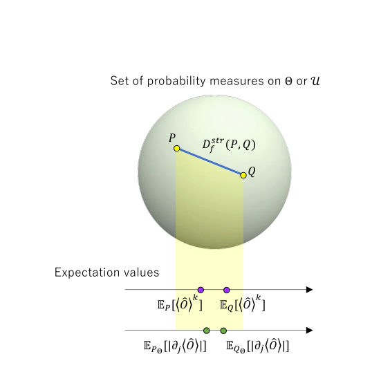
Fig 1. FIG. 1. Conceptual diagram illustrating that the structural f-divergence Dstr f (P, Q) bounds both the difference in the k- th moments of the cost function and the difference in the expected gradient magnitudes between probability measures P and Q on either the parameter space Θ or the unitary group U. Here, ⟨O⟩denotes the cost function defined in Eq. (2) and ˆO = O/∥O∥∞denotes the operator normalized by the operator norm.
Summary. This paper introduces a new information-theoretic metric called structural f-divergence to quantify how differences in parameter distributions affect the landscape of quantum cost functions. It provides tight, universal bounds on gradient vanishing and cost concentration, offering new design principles for optimizing parameterized quantum circuits.
Why it may be interesting. not directly relevant
Detailed structure
Main problem. The vanishing of cost-function gradients (barren plateaus) in variational quantum algorithms is typically analyzed using high-randomness assumptions, which lack design principles for choosing realistic probability measures on parameter spaces.
Main result. The authors introduce 'structural f-divergence' and establish tight, universal analytical bounds that relate the discrepancy between probability distributions to differences in expected gradient magnitudes and cost-function moments.
Method. The study utilizes information-geometric tools, specifically a new symmetric, normalized f-divergence-based measure, to derive trade-off inequalities using properties like the data processing inequality and Hölder's inequality.
Model / system. The framework is applied to Parameterized Quantum Circuits (PQCs) consisting of n qubits and L layers of alternating gates, using unitary operators $U( heta)$ and Hermitian cost function operators $O$.
Key observables. Expected gradient magnitude, cost-function moments (even and odd), and cost concentration.
Important parameters / regimes. Probability measures on the parameter space (P and Q), number of qubits (n), number of layers (L), and the structural f-divergence metric.
Assumptions / limitations. The function f must be twice-differentiable, strictly convex, and satisfy f(1)=0; equality conditions are demonstrated using a minimal one-qubit, one-layer ansatz.
Figures summary. Figure 1 provides a conceptual diagram showing how structural f-divergence bounds the differences in cost function moments and expected gradient magnitudes.
Paper structure. The paper introduces the barren plateau problem, defines the new structural f-divergence metric, establishes analytical trade-off inequalities for gradients and moments, proves the tightness of these bounds using specific ansatz examples, and applies the framework to derive conditions for avoiding barren plateaus and suppressing noise.
Abstract
The barren plateau phenomenon, in which cost-function gradients of variational quantum algorithms vanish exponentially, remains a central obstacle for near-term quantum computing. Existing analyses typically depend on t-design or Haar-random assumptions and bound quantities at the level of unitary distributions, offering limited insight for designing probability measures on the parameter space of parameterized quantum circuits. In this paper, we introduce the structural $f$-divergence, a symmetric $f$-divergence-based measure between probability distributions on the parameter space. We establish analytically trade-off inequalities that bound the discrepancies in the expected gradient magnitude and in the cost-function moments between a distribution on PQC and a reference distribution; equality is attained by a minimal one-qubit, one-layer ansatz. As applications, we derive necessary conditions on probability measures for avoiding BPs and cost concentration, and sufficient conditions that suppress noise-induced deviations.
Authors: Antik Sihi, Caden Ginter, Kristjan Haule, Subhasish Mandal Type: both · Category: strongly correlated electrons · PDF:https://arxiv.org/pdf/2605.16771v1 Analysis basis: full PDF text, analyzed in chunks
Topic relevance:Kondo & dissipative impurity2/5
↔ Scroll figures horizontally
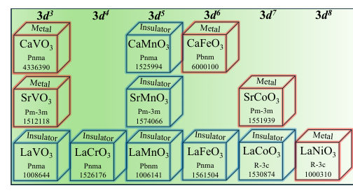
Fig 1. FIG. 1. Overview of the ABO3 perovskite oxides investigated in this work. Shown are the experimentally reported crystal structures (space groups), Crystallography Open Database (COD) identification numbers, and metallic or insulating ground states with A = Ca, Sr, La and B = V, Cr, Mn, Fe, Co, Ni. The materials are organized according to the nomi- nal transition-metal 3d electron count (left→right) fixing the A-site in a periodic table fashion, which also highlights the evolution from correlated metals to insulators across the se- ries.
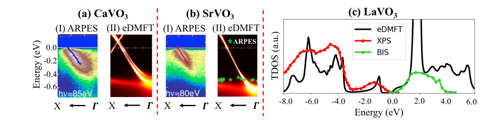
Fig 2. FIG. 2. Comparison of experimental and eDMFT spectral properties for vanadium-based perovskites. Panels (a) and (b) show momentum-resolved spectral functions of CaVO3 and SrVO3 along the Γ–X direction. ARPES data [panels (I)] are reproduced from the literature [90], with corresponding eDMFT results shown in panels (II). For SrVO3, the second derivative of the ARPES energy distribution curves is overlaid as green stars [91, 92]. Panel (c) compares the eDMFT total density of states (TDOS, black) for LaVO3 with experimental x-ray photoemission spectroscopy (XPS, red) and bremsstrahlung isochromat spectroscopy (BIS, green); experimental spectra are reproduced from Ref. [93].
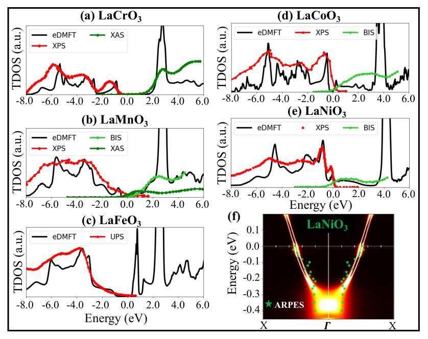
Fig 3. FIG. 3. Spectral properties of LaMO3 (M = Cr, Mn, Fe, Co, Ni) in the paramagnetic phase. Panels (a)–(e) show the eDMFT total density of states (TDOS, black) compared with experimental x-ray photoemission spectroscopy (XPS, red), x-ray absorption spectroscopy (XAS, green), and bremsstrahlung isochromat spectroscopy (BIS, lime green) data reproduced from the literature [100–106]. Panel (f) compares the eDMFT momentum-resolved spectral function of metallic LaNiO3 with angle- resolved photoemission spectroscopy (ARPES) data (green stars) reproduced from Ref. [107].
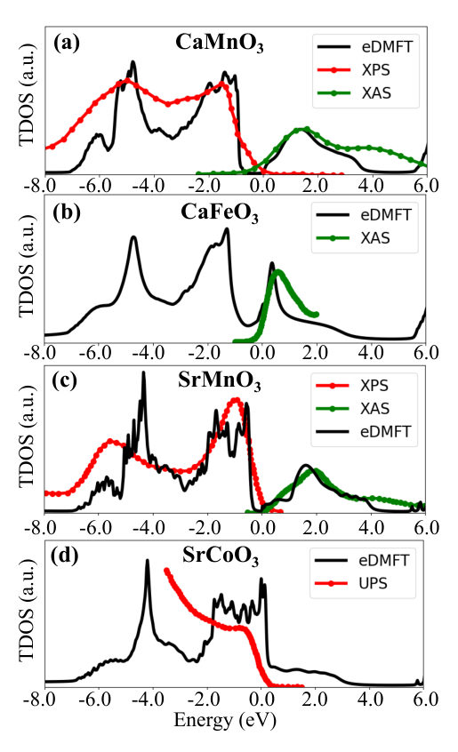
Fig 4. FIG. 4. Spectral properties of CaXO3 (X = Mn, Fe) and SrXO3 (X = Mn, Co) in the paramagnetic phase. Panels (a)–(d) show the eDMFT-computed total density of states (TDOS, black) compared with experimental x-ray photoe- mission spectroscopy (XPS, red) and x-ray absorption spec- troscopy (XAS, green) data reproduced from the literature [109–112]. For SrCoO3, the red curve denotes ultravio- let photoelectron spectroscopy (UPS) data reproduced from Ref. [113].
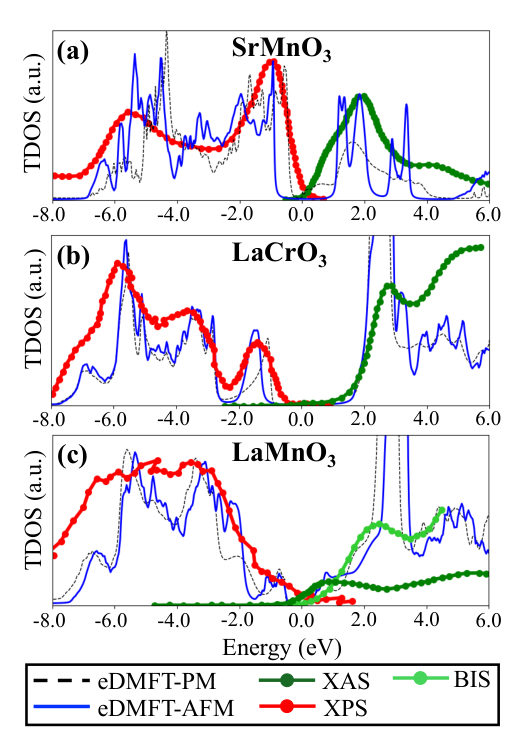
Fig 5. FIG. 5. Effect of magnetic ordering on the spectral prop- erties of selected ABO3 perovskites. Panels (a)–(c) show the eDMFT total density of states (TDOS) for SrMnO3, LaCrO3, and LaMnO3, respectively, computed in the paramagnetic (PM, black dashed lines) and antiferromagnetic (AFM, blue solid lines) phases. Experimental x-ray photoemission spec- troscopy (XPS, red), x-ray absorption spectroscopy (XAS, dark green), and bremsstrahlung isochromat spectroscopy (BIS, light green) data are reproduced from the literature [100–103, 112].
Summary. This paper shows that using the embedded DMFT (eDMFT) framework allows researchers to perform high-throughput calculations of correlated oxides using fixed, universal interaction parameters. By treating screening self-consistently, the method avoids the need for material-specific tuning and accurately reproduces experimental spectral features. This paves the way for creating large-scale, predictive databases for strongly correlated materials.
Why it may be interesting. not directly relevant
Detailed structure
Main problem. High-throughput electronic-structure discovery for strongly correlated materials is hindered by the need for material-specific, non-transferable Coulomb interaction parameters (U).
Main result. The study demonstrates that the eDMFT framework allows for a parameter-tuning-free approach using uniform U values (6 eV for metals, 10 eV for insulators) that achieves excellent agreement with experimental spectroscopy.
Method. High-throughput charge self-consistent embedded Dynamical Mean-Field Theory (eDMFT) using CTQMC for the impurity problem and the Maximum Entropy Method for analytical continuation.
Model / system. A series of 12 3d transition-metal perovskite oxides with the formula ABO3, where A = Ca, Sr, La and B = V, Cr, Mn, Fe, Co, Ni.
Key observables. Total density of states (TDOS), momentum-resolved spectral functions, bandwidth renormalization, and Mott gaps.
Important parameters / regimes. Fixed Hubbard U (6 eV for metals, 10 eV for insulators), Hund's coupling J = 0.8 eV, and magnetic phases (paramagnetic and antiferromagnetic).
Assumptions / limitations. The spectral properties are primarily governed by the dynamical self-energy rather than static interaction-induced energy shifts, allowing for a fixed-U approach.
Figures summary. Fig 1: Overview of the 12 compounds and their properties; Fig 2: Comparison of eDMFT vs ARPES/XPS/BIS for Vanadium oxides; Fig 3/4/5: Comparison of eDMFT TDOS with experimental XPS, XAS, and BIS for various Mn, Fe, and Co oxides in PM and AFM phases.
Paper structure. The paper introduces the problem of parameter-dependency in DFT+DMFT, presents the eDMFT framework and the fixed-U hypothesis, details the systematic study of 3d perovskites, benchmarks results against various spectroscopic experiments, and concludes with the implications for high-throughput materials databases.
Abstract
Strongly correlated transition-metal perovskite oxides pose a fundamental challenge for electronic-structure theory and for large-scale, data-driven materials discovery. While DFT+DMFT provides a quantitatively accurate description of such systems, its high-throughput application is hindered by the need to determine material-specific Coulomb interaction parameters ($U$). First-principles approaches such as the cRPA predict a highly nonlinear and non-transferable evolution of the interaction strength across chemically similar ABO$_3$ perovskites. Here we show that this paradigm does not extend to the large-energy-window eDMFT, which employs highly localized orbitals and treats electronic correlations and screening self-consistently within the same many-body framework. As a result, spectral properties are governed primarily by the dynamical self-energy rather than by static interaction-induced energy shifts. Recent constrained-eDMFT calculations demonstrated that, for broad classes of $3d$ transition-metal oxides, the self-consistently screened Coulomb interactions naturally fall within relatively narrow ranges for correlated metals and insulators. Motivated by these findings, we implement a high-throughput eDMFT framework employing physically derived interaction values of $U=6$ eV for metals and $U=10$ eV for insulators together with $exact$ double counting. We test this framework using systematic high-throughput eDMFT calculations for ABO$_3$ compounds (A = Ca, Sr, La; B = V--Ni) and benchmark the resulting spectral functions against photoemission experiments, where we find overall excellent agreement. Our results establish that charge self-consistent eDMFT enables robust, parameter-tuning-free high-throughput many-body calculations for correlated oxides, opening a practical pathway toward predictive electronic-structure databases for strongly correlated materials.
Authors: Hyeon Jung Kim, Seung-Jong Yoo, Jinmo Bok, Lemuel John Sese, Semin Park, Ki-Seok Kim Type: theory · Category: statistical mechanics · PDF:https://arxiv.org/pdf/2605.18148v1 Analysis basis: full PDF text, analyzed in chunks
Topic relevance:Keldysh / 2PI / non-Gaussian methods2/5
↔ Scroll figures horizontally
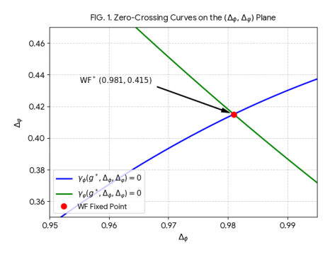
Fig 1. FIG. 1. The intersection of the independent field flow equa- tions γϕ = 0 and γφ = 0 on the (∆ϕ, ∆φ) plane. The un- constrained physical non-trivial root cleanly stabilizes at the crossing point (0.981, 0.415), isolating the true local Wilson- Fisher critical coordinates without requiring any fine-tuned kinematic matching constraints.
Summary. The authors propose a new Renormalization Group framework that uses a nonlocal effective action to solve the 3D Wilson-Fisher fixed point problem. By treating the scaling dimensions of both primary and auxiliary fields as independent variables, they eliminate systematic truncation errors. This approach yields critical exponents that are highly accurate when compared to established numerical benchmarks.
Why it may be interesting. not directly relevant
Detailed structure
Main problem. The difficulty of accurately characterizing the 3D Wilson-Fisher quantum critical point due to severe truncation errors and unphysical fixed-point divergence in standard non-perturbative Renormalization Group frameworks.
Main result. The identification of a robust, non-trivial physical fixed point with critical exponents (eta ~ 0.038, nu ~ 0.6317) that show exceptional agreement with Quantum Monte Carlo and conformal bootstrap benchmarks.
Method. A multi-loop Renormalization Group approach using a nonlocal effective action ansatz and a two-variable master equation system evaluated up to three-loop order.
Model / system. A 3D relativistic phi^4 theory (Wilson-Fisher universality class) where the quartic interaction is decoupled via a Hubbard-Stratonovich transformation into a primary field and an auxiliary field.
Key observables. Kinematic anomalous dimension (eta_phi), energy operator dimension (Delta_phi^2), and thermal correlation length exponent (nu).
Important parameters / regimes. Scaling dimensions (Delta_phi and Delta_phi_tilde) treated as independent dynamical variables, and the dimensionless coupling (g_tilde^2).
Assumptions / limitations. The framework assumes a scale-invariant action at the critical point and utilizes a three-loop truncation of the effective action.
Figures summary. Figure 1 illustrates the intersection of the two independent field flow equations (gamma_phi = 0 and gamma_phi_tilde = 0) on the scaling dimension plane, marking the stable physical root.
Paper structure. The paper introduces the problem of truncation errors in RG, presents a nonlocal effective action ansatz using Hubbard-Stratonovich transformation, details the multi-loop diagrammatic calculations, demonstrates the numerical solution of the two-variable master equations, and validates the results against benchmarked data.
Abstract
We present a novel Renormalization Group (RG) framework based on a nonlocal effective action ansatz to tame the strong coupling dynamics of the three-dimensional relativistic $φ^{4}$ theory. By implementing a Hubbard-Stratonovich transformation, we decouple the quartic interaction into a system of the primary field $φ$ and an auxiliary field $\varphi \sim φ^2$. Rather than freezing the intermediate scaling dimensions, the nonlocality of our effective action allows both exponents $Δ_φ$ and $Δ_{\varphi}$ to act as fully independent, unconstrained dynamical variables.This nonlocal propagator framework plays a critical role in the RG flow: evaluating self-energies and vertex fluctuations up to the three-loop order, the nonlocality drives precise structural cross-cancellations among multi-loop fluctuations near the Gaussian limit. Solving the resulting closed two-variable master equations isolates a robust, non-trivial physical fixed point at $Δ_φ^{*} \approx 0.981$ and $Δ_{\varphi}^{*} \approx 0.415$. These dynamic exponents yield a kinematic anomalous dimension $η_φ \approx 0.038$, an energy operator dimension $Δ_{φ^2} \approx 1.417$, and-via mass deformation-a thermal correlation length exponent $ν\approx 0.6317$, demonstrating exceptional quantitative agreement with high-precision Quantum Monte Carlo (QMC) and conformal bootstrap benchmarks. Our results rigorously confirm that unfreezing the nonlocal degrees of freedom successfully eliminates the systematic truncation errors inherent to conventional local ansatz treatments, simultaneously resolving both the static scaling and thermodynamic flows of the Wilson-Fisher universality class.
Authors: Juan Manuel Diaz, Alejandro Perez Type: theory · Category: other · PDF:https://arxiv.org/pdf/2605.17935v1 Analysis basis: full PDF text, analyzed in chunks
Topic relevance:Keldysh / 2PI / non-Gaussian methods2/5
↔ Scroll figures horizontally
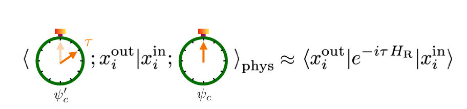
Fig 1. FIG. 1: The results in a picture: In a timeless closed system where all the allowed quantum states have the same total energy E there is no external time evolution. Assuming that the Hamiltonian is H = Hc + HR where Hc is the Hamiltonian of an internal (clock) degree of freedom, one can write the (boundary) states, for which the transition amplitudes will be computed, as ⟨ψ′ c; xout i | (with ψ′ c and ψc denoting the clock states and xi the rest of the universe degrees of freedom). When the boundary clock states are in suitable semiclassical states, their relative features encode internal time τ. In the picture, these states are represented by the clock cartoon inside the Dirac ket and bra...
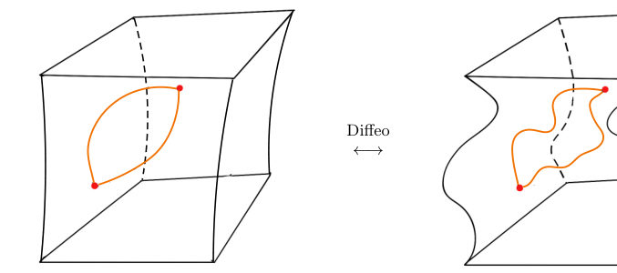
Fig 2. FIG. 2: Same data give rise to different spacetime developments depending on the arbitrary fields N(x) and N i(x). The two spacetime developements are solutions of Einstein’s equations related by a diffeomorphism.
Summary. This paper addresses the 'problem of time' in quantum gravity by showing that time evolution is an emergent phenomenon. By using a path integral view, the authors demonstrate that a semiclassical clock state can resolve the ambiguity of backward-propagating amplitudes, effectively recovering standard Schrödinger dynamics from a fundamentally timeless theory.
Why it may be interesting. not directly relevant
Detailed structure
Main problem. How time evolution and a directed arrow of time emerge from a fundamentally timeless, generally covariant quantum system, and how to resolve the 'cosine problem' in path integral representations.
Main result. The authors show that Schrödinger evolution and forward-propagating amplitudes emerge naturally when a clock degree of freedom is prepared in a semiclassical 'good-clock state', which breaks time-reversal symmetry.
Method. A path integral approach using a non-relativistic toy model and semiclassical approximations (stationary phase) to analyze transition amplitudes.
Model / system. A non-relativistic, closed, background-independent quantum system with a fixed total energy E, decomposed into a clock subsystem (harmonic oscillator or free particle) and the rest of the universe.
Key observables. Dirac observables (gauge-invariant quantities), relational observables, and the emergent physical time parameter.
Important parameters / regimes. The semiclassical limit (|z| >> 1), the large energy regime, and the energy-time uncertainty relation.
Assumptions / limitations. The model assumes a non-interacting clock and a fixed energy eigenvalue; it also assumes the existence of suitable semiclassical 'good-clock' states.
Figures summary. Figure 1 shows a schematic of how clock boundary states select forward-propagating amplitudes; Figure 2 illustrates different spacetime developments related by 4D diffeomorphisms.
Paper structure. The paper reviews general covariance and timelessness, critiques existing classical and quantum clock approaches, defines the cosine problem, and then uses a non-relativistic model to demonstrate the emergence of time via path integrals.
Abstract
We show that the emergence of time evolution in an otherwise timeless nonrelativistic closed quantum system -- viewed as a poor man's model of generally covariant quantum theory -- can be understood from the perspective of the path integral representation. As often happens in the functional integral approach, this viewpoint offers a more intuitive account of features that become cumbersome in the operator/Hilbert-space formulation. We show how Schrödinger evolution emerges once a clock degree of freedom is identified and placed in a suitable semiclassical good-clock state'. Our analysis has a consequence that extends to path integral formulations of generally covariant systems with action $S$ (including gravity). In such theories certain transition amplitudes take the form $\exp(iS/\hbar)+\exp(-iS/\hbar)$ rather than the expectedforward propagating' $\exp(iS/\hbar)$. This feature, known as the {\em cosine problem}, appears in concrete regularizations of the path integral, for example in the spin foam representation defining the physical inner product between spin network states in loop quantum gravity. Both formally and in explicit regularizations, this apparent difficulty has led some authors to seek modifications of the basic amplitudes to eliminate backward propagation. Our model shows that the cosine problem is instead a natural consequence of time-reversal invariance of the fundamental dynamics together with the time-neutral boundary states commonly used in transition amplitudes. When a suitable clock system is identified and placed in a semiclassical good-clock state', it introduces a time arrow selecting theforward propagating' $\exp(iS/\hbar)$, without modifying the fundamental dynamics. The analysis clarifies how time emerges under suitable conditions and emphasizes that, in the canonical formulation, quantum gravity is fundamentally timeless.
Authors: Lena Tokuhiro, Amine Bentellis, Jeanette Miriam Lorenz Type: theory · Category: quantum information and computing · PDF:https://arxiv.org/pdf/2605.18540v1 Analysis basis: full PDF text, analyzed in chunks
Topic relevance:entanglement & information structure1/5
↔ Scroll figures horizontally
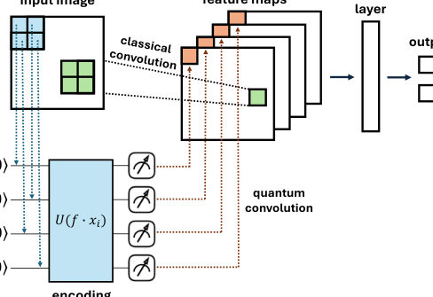
Fig 1. Fig. 1: Architecture sketch of the CNN and QCCNN for the patch size 2 × 2.
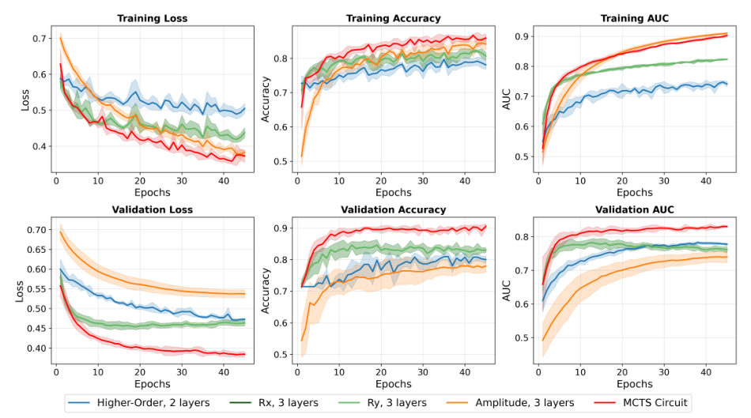
Fig 2. Fig. 3: Comparison of data encoding strategies on BreastMNIST. The MCTS-derived 2×2 circuit is compared against baseline encodings using RX, RY , and higher-order gates with 1 to 3 re-uploading layers; only the best-performing configuration for each baseline is shown. The two angle encodings (RX and RY ) achieve identical performance and therefore overlap. Results are averaged over five random seeds, with error bars indicating standard deviation.
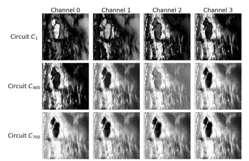
Fig 3. Fig. 6: Feature maps produced by 2×2 patch-sized quantum encodings on BreastMNIST. Circuits C1, C400, and C700 represent the best, medium, and worst performing encodings from the search, respectively. Higher-ranked circuits produce more diverse feature representations.
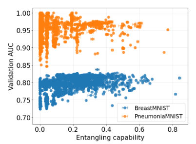
Fig 4. Fig. 7: Entanglement capability versus validation AUC of various encoding circuits for the BreastMNIST (blue) and the PneumoniaMNIST (orange) datasets. Entanglement values are averaged over three input parameters, with error bars indicating standard deviation.
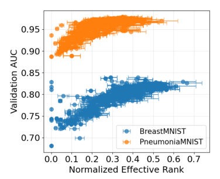
Fig 5. Fig. 9: Normalized effective rank against validation AUC for candidate encodings on both datasets. A higher effective rank indicates greater feature map diversity. The effective rank is computed on a subset of 20 images, with error bars indicating standard deviation. Pearson correlation: r = 0.87 (BreastMNIST) and r = 0.82 (PneumoniaMNIST).
Summary. This paper uses Monte Carlo Tree Search to automatically find high-performing quantum data encoding circuits for hybrid neural networks. It discovers that the diversity of the feature map, measured by effective rank, is a key predictor of success, providing a way to accelerate the search for effective quantum machine learning models.
Why it may be interesting. not directly relevant
Detailed structure
Main problem. The challenge of discovering optimal data encoding strategies for Quantum-Classical Convolutional Neural Networks (QCCNNs) and identifying which circuit properties predict classification performance.
Main result. MCTS-discovered encoding circuits outperform standard strategies, and the effective rank of feature maps was identified as a strong predictor of encoding performance, whereas entanglement and Fourier properties were not.
Method. Monte Carlo Tree Search (MCTS) with progressive widening is used to automate the discovery of encoding circuits, combined with an analysis of feature map diversity via effective rank.
Model / system. A hybrid Quantum-Classical Convolutional Neural Network (QCCNN) architecture using non-variational quantum blocks for feature extraction on medical imaging datasets (BreastMNIST and PneumoniaMNIST).
Key observables. Classification accuracy, Area Under the ROC Curve (AUC), effective rank of feature maps, entanglement capability, and Fourier spectrum.
Important parameters / regimes. Patch sizes (2x2 and 3x3 qubits), scaling factor (f), and MCTS exploration constant (c).
Assumptions / limitations. The study assumes a noise-free simulation regime and does not explicitly account for NISQ-era hardware noise or classical simulation hardness.
Figures summary. Schematic of QCCNN architecture, visual representation of discovered circuits, performance comparisons against baseline encodings, training metrics (loss/accuracy), and correlations between effective rank and AUC.
Paper structure. The paper introduces the QCCNN problem, describes the MCTS-based search methodology, presents the discovered circuits and their performance on medical datasets, analyzes the correlation between circuit metrics and accuracy, and discusses limitations regarding noise and quantum advantage.
Abstract
Quantum machine learning (QML) has attracted considerable research interest, yet whether it offers practical benefits over classical approaches remains an open question. The choice of data encoding significantly influences QML performance, but why certain encodings outperform others remains poorly understood. We employ Monte Carlo Tree Search (MCTS) to discover optimal data encoding circuits for a quantum-classical convolutional neural network (QCCNN) combining a non-variational quantum block for feature extraction with a classical classifier. Evaluating on two medical imaging datasets, the discovered circuits outperform commonly used encoding strategies while showing competitive results compared to purely classical counterparts. We further analyze metrics to identify predictors of encoding performance. Entanglement capability and Fourier decomposition provide minimal insight, whereas the effective rank of the feature maps exhibits meaningful correlation and can serve as a threshold criterion to accelerate the search for high-performing encodings. Our findings provide both a practical method for encoding discovery and new insights into what makes data encodings effective in QML.
Authors: Y. Komiyama, Y. Ikeda, T. Taniguchi, T. J. Williams, M. Matsuda, S. Asai, T. Masuda, H. Kuwahara, H. Kuroe, T. Kawamata, I. Watanabe, M. Fujita, T. Adachi Type: experiment · Category: strongly correlated electrons · PDF:https://arxiv.org/pdf/2605.16988v1 Analysis basis: full PDF text, analyzed in chunks
Topic relevance:Frenkel-Kontorova1/5
↔ Scroll figures horizontally
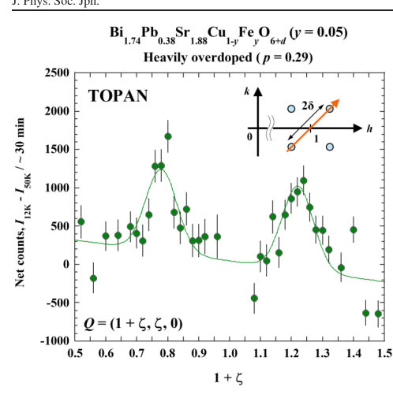
Fig 1. Fig. 1. (Color online) Difference profile obtained by subtracting the data at 50 K from those at 12 K in HOD Bi1.74Pb0.38Sr1.88Cu1−yFeyO6+d with y = 0.05 (p = 0.29) using TOPAN. Inset shows the scan trajectory in the reciprocal (h, k) plane of the orthorhombic notation. Solid line is a fitting result using Eq. (1).
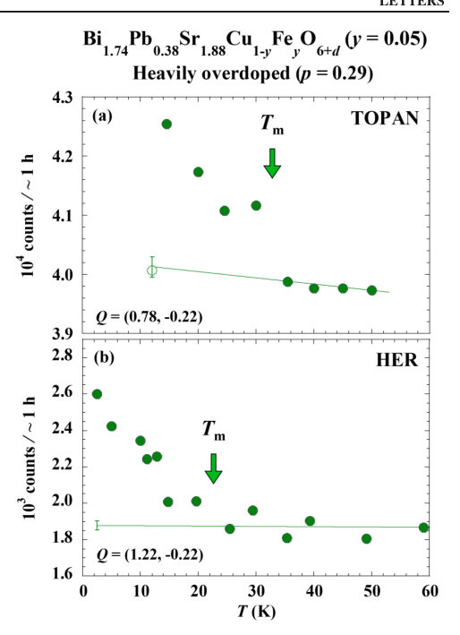
Fig 2. Fig. 2. (Color online) Temperature dependence of net counts at the IC peak position for HOD Bi1.74Pb0.38Sr1.88Cu1−yFeyO6+d with y = 0.05 (p = 0.29) for (a) TOPAN (energy resolution: ∼1.5 meV) and (b) HER (∼0.1 meV). Solid lines represent the background, derived from the temperature- dependent intensity changes at the (h, k) position unaffected by the IC peaks, extrapolated from the data at the highest temperature. Error bars at the end of background lines represent errors in the intensity change. The open circle in (a) represents the background value at Q = (0.78,-0.22) in Fig. 1 added to the 50 K data. Arrows indicate the magnetic transition temperature Tm at which the net counts begin to...
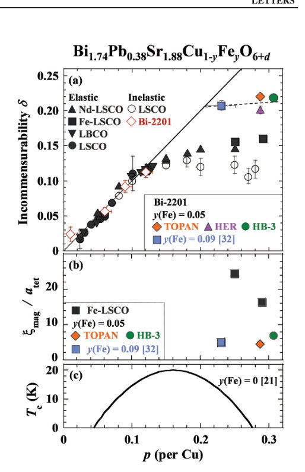
Fig 3. Fig. 3. (Color online) (a) Hole-concentration dependence of incom- mensurability δ in HOD Bi1.74Pb0.38Sr1.88Cu1−yFeyO6+d (y = 0.05) obtained with TOPAN, HER, and HB-3, together with overdoped Bi1.75Pb0.35Sr1.90Cu1−yFeyO6+d (y = 0.09)32) analyzed using the same pro- cedure as in the present study, La2−xBaxCuO4,37–39) La2−xSrxCuO4,8,40–42)
Summary. This paper demonstrates that incommensurate antiferromagnetic order exists in the heavily overdoped, non-superconducting regime of Bi-2201 cuprates when stabilized by iron substitution. The findings suggest that robust antiferromagnetic correlations persist even beyond the superconducting dome. The observed magnetism appears to be a glassy state induced by the pinning of intrinsic fluctuations by Fe impurities.
Why it may be interesting. not directly relevant
Detailed structure
Main problem. The study investigates whether incommensurate antiferromagnetic (AFM) order or fluctuations persist in the non-superconducting, heavily overdoped regime of Bi-2201 cuprates.
Main result. The researchers discovered incommensurate AFM peaks in 5% Fe-substituted Bi-2201 in the heavily overdoped regime, suggesting that Fe-substitution stabilizes existing AFM fluctuations into a glassy magnetic state.
Method. Elastic neutron scattering experiments were performed using triple-axis spectrometers (TOPAN, HER, and HB-3) on single crystals, supplemented by magnetic susceptibility and muon spin rotation (muSR) measurements.
Model / system. The physical system is Fe-substituted Bi-2201 cuprate (Bi1.74Pb0.38Sr1.88Cu1-yFeyO6+d) in the heavily overdoped, non-superconducting regime (hole concentration p approx 0.29 to 0.31).
Key observables. Incommensurability (delta), magnetic correlation length (xi_mag), magnetic transition temperature (Tm), and hole concentration (p).
Important parameters / regimes. Fe-substitution level (y = 0.05), hole concentration (p approx 0.29-0.31), and temperature.
Assumptions / limitations. The study assumes that the observed magnetic order is induced/stabilized by Fe impurities acting on intrinsic AFM fluctuations.
Figures summary. Figure 1 shows the difference profile of elastic neutron scattering and the scan trajectory; Figure 2 shows the temperature dependence of net counts; Figure 3 shows the hole-concentration dependence of incommensurability across various cuprates.
Paper structure. The paper introduces the problem of magnetism in the heavily overdoped regime, describes the experimental setup and sample preparation, presents neutron scattering results showing incommensurate peaks, discusses the temperature dependence and glassy nature of the magnetism, and concludes with a discussion on the mechanism of Fe-induced stabilization.
Abstract
Elastic neutron scattering experiments showed incommensurate antiferromagnetic peaks in 5% Fe-substituted Bi-2201 cuprate in the non-superconducting heavily overdoped regime. The incommensurability delta~0.21 is comparable to that observed in Fe-substituted Bi-2201 in the overdoped regime. [Hiraka et al., Phys. Rev. B 81, 144501 (2010).] The magnetic correlation length is comparable between the overdoped and non-superconducting heavily overdoped regimes. It is plausible that incommensurate antiferromagnetic order is induced and stabilized by Fe in the heavily overdoped regime, which suggests a robust antiferromagnetic correlation beyond the superconducting dome in the phase diagram.
Authors: Vinooth Kulkarni, Jaehyun Lee, Lauren Li, Aaron Orenstein, Xinpeng Li, Shuai Xu, Daniel Blankenberg, Vipin Chaudhary Type: theory · Category: quantum information and computing · PDF:https://arxiv.org/pdf/2605.17769v1 Analysis basis: full PDF text, analyzed in chunks
Topic relevance:Rydberg arrays1/5
↔ Scroll figures horizontally
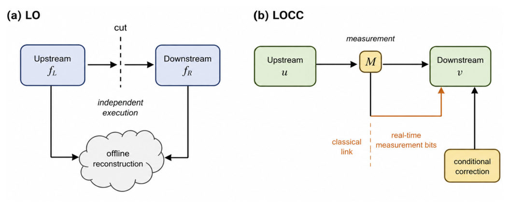
Fig 1. Fig. 1: Execution semantics of circuit cutting. In LO, cut fragments execute independently and are stitched through offline reconstruction. In LOCC, upstream measurement outcomes are transmitted over a classical link and trigger downstream conditional operations, creating explicit precedence between fragments.
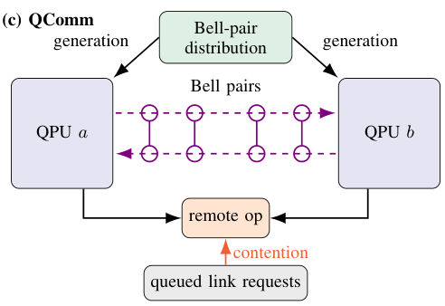
Fig 2. Fig. 2: QComm abstraction used by InterQ. Remote execution across modules consumes Bell-pair resources managed by a shared Bell-pair distribution service, so latency depends on Bell-pair generation, success probability, and contention from concurrent link requests.
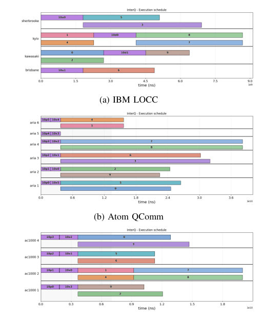
Fig 3. Fig. 3: Execution schedule comparison of IBM LOCC, Atom QComm, and Ionq QComm architectures for the 11-circuit workload.
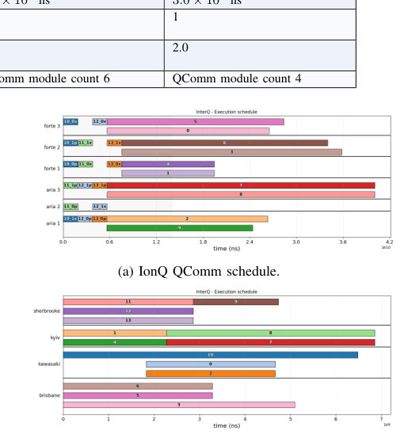
Fig 4. Fig. 4: InterQ schedules for the MQT and QUEKO bench- mark workload under two communication models: (a) IonQ QComm, where scheduling is influenced by remote-operation demand and quantum-link availability, and (b) IBM adaptive LOCC mode, where no circuits are partitioned because all circuits fit within the available IBM QPU capacities.
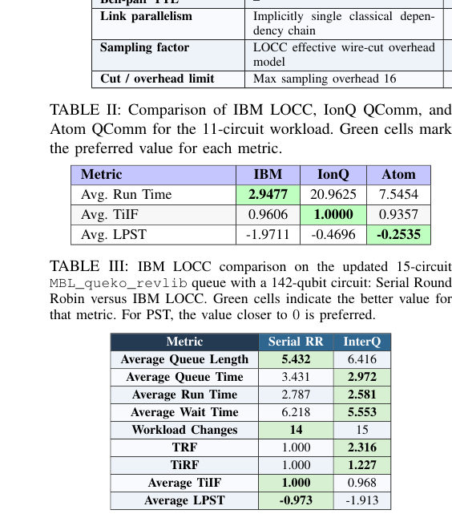
Fig 5. Figure 5 compares the execution schedules, and Table III reports the corresponding makespan and fidelity-related met- rics. Serial Round Robin achieves better queue length, work- load changes, TiIF, and LPST, whereas InterQ reduces queue time, runtime, and wait time while improving TRF and TiRF through adaptive LOCC partitioning. The 142-qubit circuit cannot be placed directly on any 127-qubit backend and is therefore omitted from the Serial Round Robin sched- ule; InterQ partitions it into LOCC-compatible upstream and downstream fragments and schedules them across the modular backend pool.
Summary. The paper presents InterQ, a scheduler designed to manage quantum jobs across modular processors with different communication technologies. It demonstrates how to adaptively partition circuits to balance the costs of communication latency and sampling overhead. The study highlights how different hardware platforms like superconducting and trapped-ion systems offer distinct trade-offs between speed and fidelity.
Why it may be interesting. It addresses the critical scaling bottleneck of moving from monolithic to modular quantum computing, specifically focusing on the interplay between hardware-specific interconnects (photonic vs. classical) and computational throughput.
Detailed structure
Main problem. Efficiently scheduling and partitioning quantum workloads across modular QPU architectures that use heterogeneous communication links (classical vs. quantum).
Main result. The InterQ scheduler optimizes the trade-off between runtime, fidelity, and communication overhead, revealing that superconducting systems minimize runtime while neutral-atom systems achieve the highest fidelity.
Method. A communication-aware, iterative scheduling framework (InterQ) that jointly optimizes job placement, adaptive circuit cutting, and communication mode selection (LO, LOCC, or QComm) using a discrete-event simulation.
Model / system. Modular quantum architectures including superconducting (LOCC-based), trapped-ion (QComm-based), and neutral-atom (hierarchical/optical link) systems.
Key observables. Throughput, latency (makespan), fidelity (LPST, TiIF), queue time, and communication costs (Bell-pair consumption, synchronization delay).
Important parameters / regimes. Qubit capacity, communication bandwidth, entanglement generation rates, sampling overhead (scaling with number of cuts), and synchronization constraints.
Assumptions / limitations. Assumes a shared quantum cloud environment where jobs compete for limited communication resources and treats entanglement generation as a resource-constrained service.
Figures summary. Figure 1 contrasts LO vs. LOCC execution semantics; Figure 2 illustrates the QComm abstraction with shared Bell-pair resources.
Paper structure. The paper introduces the challenge of modular scheduling, defines the InterQ framework and its optimization objectives, details the hardware-specific communication models (LO, LOCC, QComm), presents a simulation-based evaluation across various hardware platforms and workloads, and concludes with an analysis of architecture-dependent trade-offs.
Abstract
As quantum computing scales toward practical workloads, future systems are expected to move beyond single monolithic processors toward modular architectures that connect multiple QPUs. Different platforms realize this modularity through different communication models: superconducting systems rely on real-time classical links and dynamic-circuit coordination, trapped-ion systems use photonic interconnects for remote entanglement, and neutral-atom systems provide strong intra-core connectivity with proposed optical links for inter-core communication. This heterogeneity makes communication-aware scheduling essential for shared modular quantum cloud environments. We present InterQ, a communication-aware scheduler for modular QPU architectures with heterogeneous communication models. InterQ jointly considers qubit capacity, placement, parallel execution, and communication-driven dependencies across distributed subcircuits, while enabling adaptive circuit cutting to reduce makespan while balancing fidelity and communication overhead. The framework distinguishes classical-link execution, where measurement and feedforward impose synchronization constraints, from quantum-link execution, where entanglement distribution and state transfer determine coordination cost. Using a unified simulation framework to compare superconducting, trapped-ion, and neutral-atom modular systems, InterQ shows how communication models and scheduler-driven cutting decisions affect throughput, latency, and fidelity. Across evaluated workloads, InterQ exposes an architecture-dependent tradeoff: neutral-atom modular QPUs achieve the highest fidelity, superconducting systems minimize runtime, and trapped-ion systems provide a balanced intermediate profile across fidelity and makespan.
Authors: Andres Paz, Dan Grossman Type: theory · Category: quantum information and computing · PDF:https://arxiv.org/pdf/2605.16595v1 Analysis basis: full PDF text, analyzed in chunks
Topic relevance:quantum measurements1/5
↔ Scroll figures horizontally
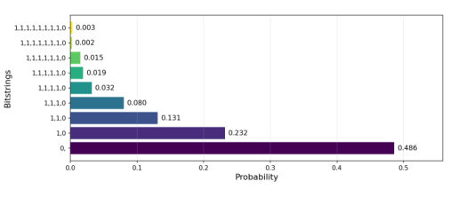
Fig 1. Fig. 2. Distribution of measurement outcomes from 1000 simulation runs of the repeat-until-success program. Bitstrings of length n occur with probability 1/2n, confirming the expected geometric decay.
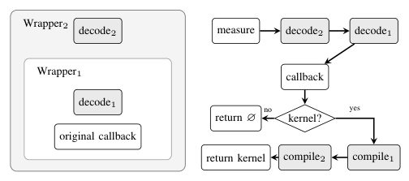
Fig 2. Fig. 3. Composability of two compiler passes. Left: the wrapping structure after pass 1 and pass 2 each wrap the original callback. Right: runtime data flow when a measurement triggers the outermost wrapper. Decoders run outside-in (pass 2 then pass 1); if the callback returns a kernel, compilers run inside-out (pass 1 then pass 2).
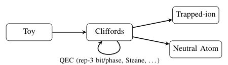
Fig 3. Fig. 5. Compilation graph and example pipelines. Each edge is a compiler pass. QEC passes (loop) preserve the Cliffords ISA and can be applied repeatedly for concatenation.
Summary. This paper introduces qstack, a new compiler framework designed to automate the complex task of composing quantum error correction layers with hardware-specific instructions. By treating classical feedback as opaque callbacks, it allows for a seamless, automated pipeline that handles the transition from high-level logical gates to physical hardware operations. This approach significantly reduces the manual effort required to design and implement multi-layered fault-tolerant quantum programs.
Why it may be interesting. not directly relevant
Detailed structure
Main problem. The difficulty of composing multiple layers of quantum error correction (QEC) and hardware-specific ISA translations without manual, error-prone adaptation of the classical feedback logic required for syndrome measurement.
Main result. The development of qstack, a compiler framework that uses a callback wrapping mechanism to enable automated, compositional, end-to-end compilation from high-level gates to hardware-native instructions.
Method. A kernel-based intermediate representation (IR) where classical logic is accessed via opaque callbacks, which are automatically wrapped by compiler passes to decode measurement results and re-compile dynamically generated kernels.
Model / system. A fault-tolerant quantum computing framework supporting various gate sets (Toy, Clifford) and error-correcting codes (bit-flip, phase-flip, Steane, and Shor codes) targeting platforms like trapped-ion and neutral-atom hardware.
Key observables. Measurement stack (classical outcomes) and kernel stack (hierarchy of nested kernels and qubit allocations).
Assumptions / limitations. The classical logic is treated as an opaque callback; the framework assumes a LIFO (Last-In, First-Out) discipline for measurements.
Figures summary. Figure 1 shows gate definitions; Figure 2 shows a histogram of a repeat-until-success program; Figure 3 illustrates the wrapper structure and runtime data flow; Figure 4 defines the operational semantics; Figure 5 shows a compilation graph.
Paper structure. The paper introduces the problem of hybrid quantum-classical compilation, presents the qstack framework and its callback wrapping mechanism, provides formal operational semantics, demonstrates end-to-end compilation pipelines including concatenated QEC codes, and discusses limitations and future integration with OpenQASM 3.
Abstract
Compiling quantum programs for fault-tolerant execution requires transforming high-level operations through multiple abstraction layers: from logical gates to error-corrected encodings to hardware-native instructions. A key challenge is that quantum error correction turns purely quantum programs into hybrid quantum-classical programs, where classical feedback from syndrome measurements drives quantum corrections at runtime. Existing compilation frameworks handle these quantum and classical components separately, requiring manual adaptation of classical logic at each compilation stage, all while preserving program semantics. We present qstack, a compiler framework built around a purely quantum intermediate representation in which classical logic is accessed only through opaque callbacks, written in any classical language. The framework's central mechanism, callback wrapping, enables compositional compilation: each compiler pass automatically adapts both quantum operations and their associated classical callbacks, and any kernel dynamically generated by a callback is compiled through the full pipeline. This allows ISA translation and quantum error correction to be expressed as composable compiler passes, including concatenation of error-correcting codes, without manual intervention. We demonstrate end-to-end compilation from a high-level gate set through Clifford gates to trapped-ion native operations, with bit-flip and phase-flip repetition codes, the Steane code, and the Shor code obtained by composing two repetition passes.
Authors: Hussain Gohar Type: theory · Category: other · PDF:https://arxiv.org/pdf/2605.18551v1 Analysis basis: full PDF text, analyzed in chunks
Topic relevance:entanglement & information structure1/5
↔ Scroll figures horizontally
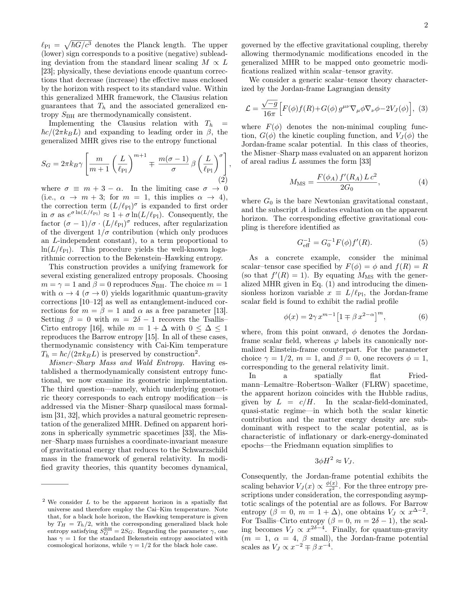
Fig 1. Low-resolution page preview, page 2
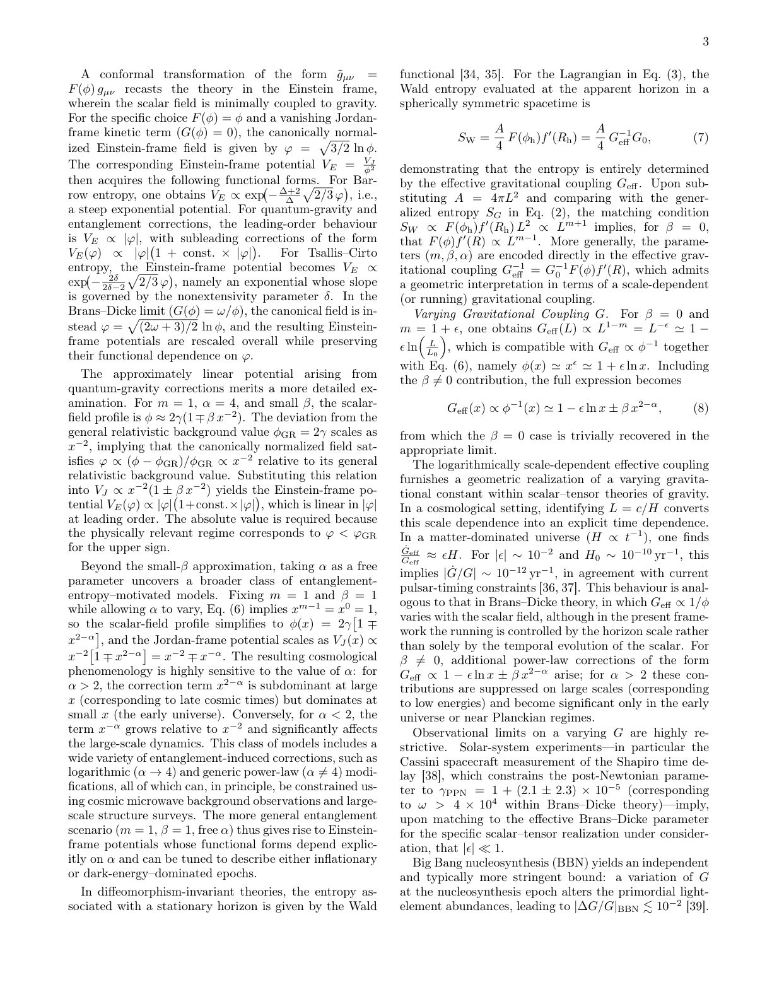
Fig 2. Low-resolution page preview, page 3
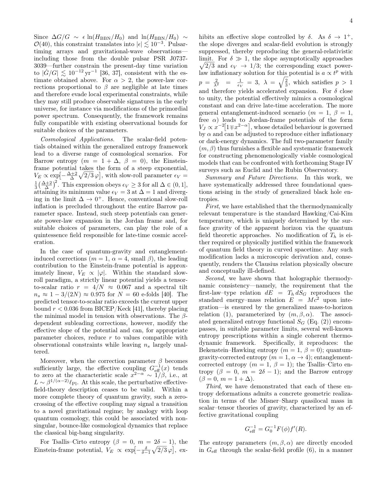
Fig 3. Low-resolution page preview, page 4
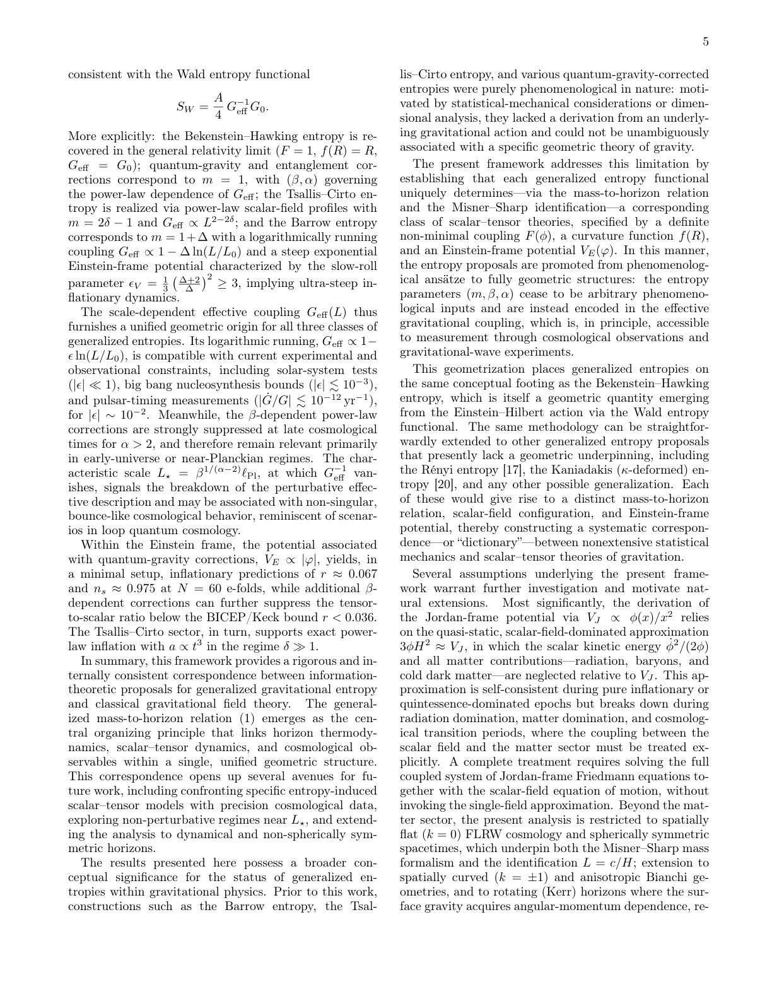
Fig 4. Low-resolution page preview, page 5
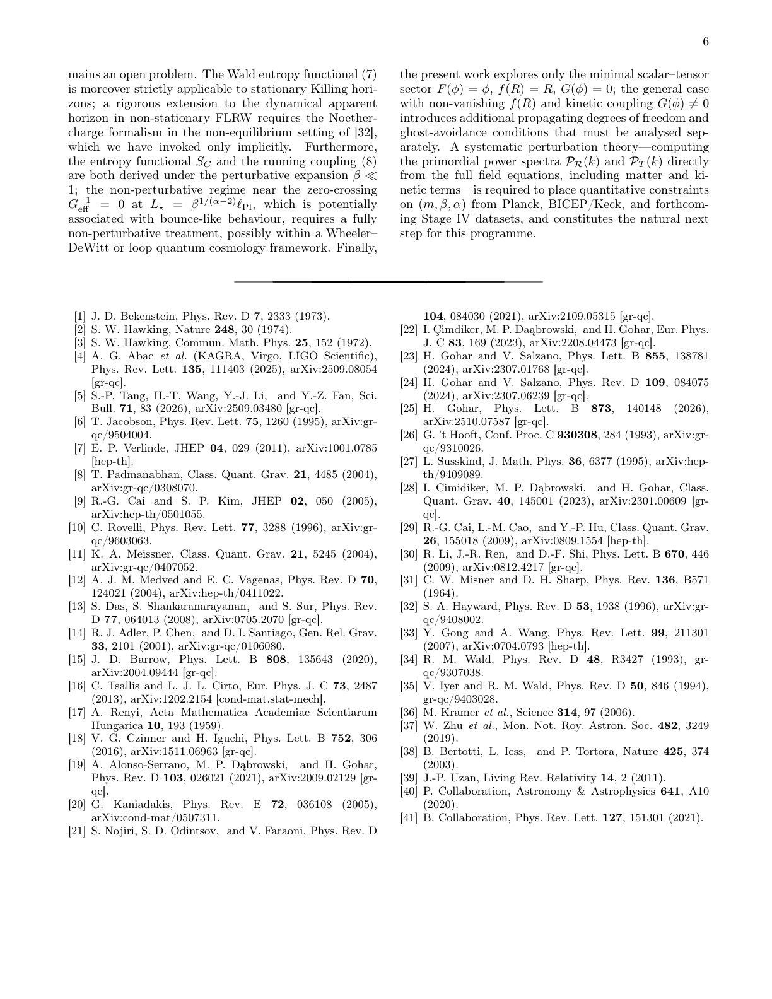
Fig 5. Low-resolution page preview, page 6
Summary. This paper provides a unified geometric origin for various modified black hole entropy models by linking them to specific scalar-tensor gravity theories. It shows that these information-theoretic entropy proposals correspond to a varying effective gravitational coupling and specific scalar potentials that drive distinct cosmological phenomena like inflation and dark energy.
Why it may be interesting. not directly relevant
Detailed structure
Main problem. The paper addresses the lack of a consistent geometric/gravitational theory for generalized black hole entropy functionals (such as Barrow or Tsallis-Cirto entropy) and seeks to resolve the thermodynamic inconsistencies that arise when these entropies are used without a proper gravitational framework.
Main result. The author establishes a direct correspondence between various generalized entropy proposals and scalar-tensor gravity theories, demonstrating that these entropies can be realized through a scale-dependent effective gravitational coupling and specific scalar potentials.
Method. The study uses conformal transformations between Jordan and Einstein frames, evaluates the Wald Noether-charge entropy, and maps the Misner-Sharp quasilocal mass to a generalized mass-to-horizon relation.
Model / system. The framework involves scalar-tensor gravity theories in both Jordan and Einstein frames, applied to spherically symmetric spacetimes and spatially flat FLRW cosmologies, incorporating entropy models like Barrow, Tsallis-Cirto, and entanglement-induced corrections.
Key observables. Spectral index (ns), tensor-to-scalar ratio (r), time variation of the gravitational constant (G-dot/G), and primordial power spectrum modifications.
Important parameters / regimes. Entropy parameters (m, beta, alpha, delta, Delta), the Brans-Dich parameter (omega), and the horizon scale (L or x).
Assumptions / limitations. The framework assumes the validity of the mass-to-horizon relation and focuses on the quasi-static regime where scalar kinetic and matter energy density contributions are subdominant to the scalar potential.
Paper structure. The paper begins by defining the generalized entropy framework, moves to the geometric realization via scalar-tensor gravity, derives specific scalar potentials for different entropy models, analyzes the resulting cosmological implications (inflation and dark energy), and concludes with observational constraints.
Abstract
We develop a geometric realization of a broad class of generalized black hole entropy functionals by establishing their direct correspondence with the Misner$-$Sharp quasilocal mass and the Wald Noether$-$charge entropy in scalar$-$tensor theories of gravity. The resulting models feature a scale-dependent effective gravitational coupling, whose functional dependence is determined by the underlying entropy parameters. Within this framework, we derive explicit Einstein-frame scalar potentials: for Barrow entropy, a steep exponential potential; for Tsallis$-$Cirto entropy, an exponential potential governed by the nonextensivity parameter; and for quantum-gravity and entanglement$-$induced corrections, an approximately linear potential. These distinct potentials generate characteristic cosmological phenomenology, with implications for inflationary dynamics, late-time dark-energy behavior, and non-singular bouncing cosmologies. The framework is compatible with current constraints from solar-system tests, big-bang nucleosynthesis, and pulsar-timing observations, and it yields predictions that can be probed by forthcoming observational surveys. In this way, the analysis establishes a unified and geometrically grounded connection between information$-$theoretic entropy proposals and gravitational field theory.
Authors: Joseph Strauss, Jyotsna Sharma Type: both · Category: quantum information and computing · PDF:https://arxiv.org/pdf/2605.17217v1 Analysis basis: full PDF text, analyzed in chunks
Topic relevance:QC/QI experiment1/5
↔ Scroll figures horizontally
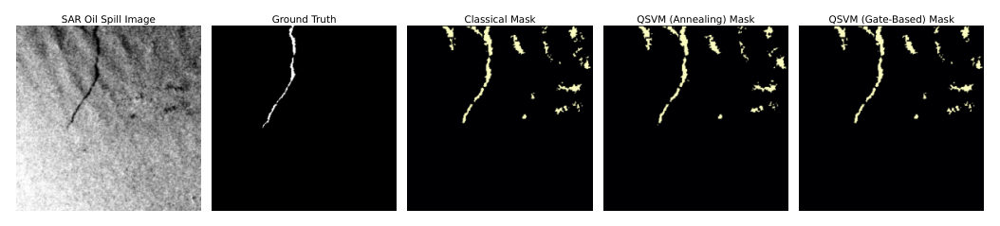
Fig 1. Fig. 1. Qualitative comparison of segmentation performance across classical and quantum architectures. Top row: High-fidelity segmentation on an easily separable spill. Middle row: Intermediate performance exhibiting partial boundary degradation. Bottom row: Poor segmentation demonstrating susceptibility to complex speckle noise and look-alikes. Columns from left to right: SAR Image, Ground Truth Mask, Classical SVM prediction, QSVM (Annealing) prediction, and QSVM (Gate-Based) prediction.
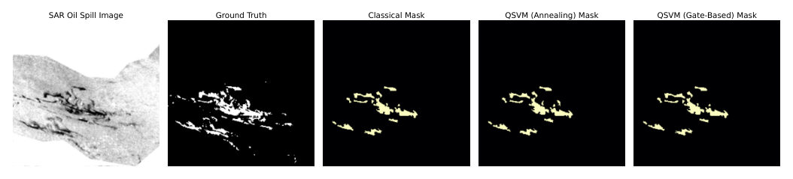
Fig 2. Fig. 2. Strait of Hormuz oil spill segmentation results. Columns from left to right: SAR Image, Ground Truth Mask, Classical SVM prediction, QSVM (Annealing) prediction, and QSVM (Gate-Based) prediction.
Summary. This paper proposes a quantum-assisted machine learning pipeline for the rapid detection of oil spills in satellite radar imagery. By using quantum annealing to optimize SVMs, the researchers achieved high-accuracy segmentation with much faster inference speeds than traditional gate-based quantum approaches. The method proved robust and transferable to geographically different maritime regions.
Why it may be interesting. not directly relevant
Detailed structure
Main problem. Achieving near-real-time, low-latency marine oil spill detection in SAR imagery while overcoming the high computational costs and data requirements of deep learning.
Main result. A quantum-assisted SVM bagging ensemble achieved performance (IoU 0.60, balanced accuracy 0.89) comparable to classical baselines, with annealing-based approaches offering superior inference efficiency over gate-based methods.
Method. A pixel-wise bagging ensemble of SVMs where quantum annealing is used to optimize support vectors via a QUBO formulation, and gate-based quantum computing is used for quantum kernel methods.
Model / system. The framework uses a pixel-wise bagging ensemble of 500 base learners applied to 5D feature vectors from Sentinel-1 SAR imagery, utilizing D-Wave quantum annealing hardware and gate-based quantum circuit simulations.
Key observables. Intersection-over-Union (IoU), F1-score, balanced accuracy, inference time, and training time.
Important parameters / regimes. 5D feature vectors (VV intensity, VH/VV ratio, local VV entropy, local VV standard deviation, and Sobel gradient magnitude); 256x256 image resolution.
Assumptions / limitations. Assumes that small, randomly sampled subsets of data can effectively represent the full dataset through a bagging ensemble; notes the emulator-to-hardware gap due to noise and connectivity.
Figures summary. Figure 1 provides a qualitative comparison of segmentation masks (Ground Truth, Classical, Annealing, and Gate-based) across different prediction qualities; Figure 2 shows qualitative segmentation results for an independent oil spill in the Strait of Hormuz.
Paper structure. The paper introduces the environmental problem and limitations of deep learning, proposes a quantum-assisted SVM ensemble, details the annealing and gate-based implementations, evaluates performance on Sentinel-1 data, compares computational trade-offs, and tests generalization on a geographically distinct dataset.
Abstract
Marine oil spills require rapid detection to mitigate severe ecological and economic damage. While satellite-based Synthetic Aperture Radar (SAR) provides essential all-weather monitoring, analyzing this data remains challenging. Deep learning models often require massive datasets and incur high latency. To address this, a pixel-wise quantum-assisted Support Vector Machine (QSVM) bagging ensemble is developed. Quantum annealing is leveraged to optimize the support vectors of individual weak SVMs on small data subsets, which are then classically aggregated. The approach is evaluated on Sentinel-1 imagery using both quantum simulation and physical quantum annealing hardware. The quantum-assisted pipeline achieved performance comparable to a rigorous classical baseline, yielding an Intersection-over-Union (IoU) of 0.60 and a balanced accuracy of 0.89. Complementary experiments with gate-based quantum computing demonstrated similar segmentation accuracy, although the annealing approach offered superior inference efficiency. Generalization was further assessed on independent oil spill imagery from the Strait of Hormuz, demonstrating the potential transferability of the trained pipeline to geographically distinct spill events. These results establish the feasibility of quantum-assisted, segmentation pipelines for near-real-time environmental monitoring.
Authors: Hiroaki Hayashi, Han Li, Feng-Feng Song, Xu-Guang Zhou, Akira Matsuo, Taeyun Kim, Enze Lv, Yuto Ishii, Zhe Qu, Gang Su, Koichi Kindo, Kwang-Yong Choi, Wei Li, Yasuhiro H. Matsuda Type: both · Category: strongly correlated electrons · PDF:https://arxiv.org/pdf/2605.17995v1 Analysis basis: full PDF text, analyzed in chunks
↔ Scroll figures horizontally
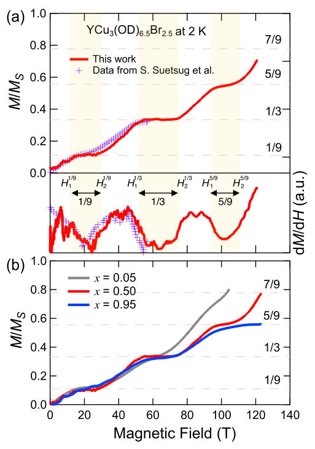
Fig 1. FIG. 1. (a) Magnetization process and dM/dH data of YCOB (x ≃0.50) measured at 2 K. Previous measurements up to 60 T [47] are denoted as purple symbols as a comparison, where a very good agreement is seen to the present measure- ments. The observed magnetization plateaus are labeled by the yellow shadow and black arrows. (b) Magnetization pro- cess for different compositions of YCOB (x ≃0.05, 0.50, and 0.95) measured at 2 K.
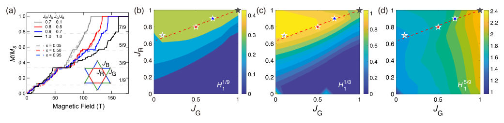
Fig 2. FIG. 2. (a) Experimental and DMRG results for the normalized magnetization curves of YCOB. The gray, red, and blue solid (dashed) curves represent the calculated (measured) data for Br compositions x ≃0.05, 0.50, and 0.95, respectively. The black curve corresponds to the ideal KHAF model. The exchange parameters, given in units of JB, are the best-fitting values obtained from the analysis described in the Supplemental Materials [58]. The inset illustrates the definition of the three exchange couplings JR, JG, and JB on the nonequivalent bonds. (b-d) Contour plots of fields Hn/9 1 for the n/9 (n = 1, 3, 5) plateaus calculated with DMRG. The best-fitting parameters for three materials and the...
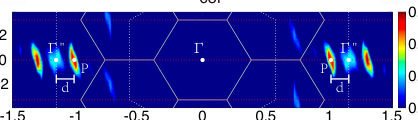
Fig 3. FIG. 3. (a) Many-body magnetization calculations for the YCOB material with x ≃0.50. The experimental data are shown as a red curve, the DMRG results are presented by the blue curve with the best-fit 3J parameter set, and the iPEPS results with the same parameter are shown with light blue color. (b) Schematic field-induced phase diagram. (c) Local moment ⟨Sz i ⟩on each site i calculated with DMRG method, with parameter set JR = 0.8, JG = 0.5, JB = 1, and a fixed magnetization of M/MS ≃4/9. The color intensity of the circle at each site i indicates the magnitude and sign of the value, indicated by the color bar on the right. (d) The average of local moment ⟨Sz⟩col (see main text). A enlarged...
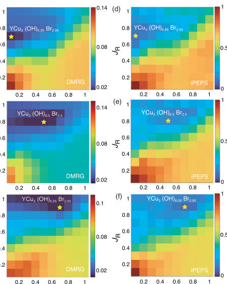
Fig 4. FIG. 5. Loss map of the fitting results for YCOB materials obtained from the (a-c) DMRG simulations and (d-f) iPEPS calculations. The best-fitting parameters are indicated by the yellow star in each panels.
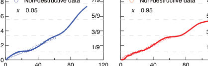
Fig 5. FIG. 4. Low-field calibration of STC high-field magnetization data for YCOB with (a) x ≃0.05 and (b) x ≃0.95.
Summary. This paper reports the discovery of a 5/9 magnetization plateau in the kagome antiferromagnet YCOB using ultrahigh magnetic fields up to 120 T. By applying tensor-network simulations, the authors demonstrate that an anisotropic 3J-type Heisenberg model explains the observed magnetization and predicts a spin supersolid phase.
Why it may be interesting. The discovery of a spin supersolid phase and the study of fractional magnetization plateaus in a frustrated kagome lattice provide deep insights into many-body dynamics and the emergence of exotic broken-symmetry phases in strongly correlated systems.
Detailed structure
Main problem. The study aims to determine the high-field magnetic behavior of the kagome antiferromagnet YCOB and investigate the existence of higher-order fractional magnetization plateaus and exotic phases like spin supersolidity.
Main result. The researchers discovered a previously unobserved 5/9 fractional magnetization plateau and identified a spin supersolid phase between the 1/3 and 5/9 plateaus using an anisotropic 3J-type Heisenberg model.
Method. High-precision magnetization measurements were performed using the single-turn coil technique up to 120 T, and experimental data were modeled using DMRG and iPEPS tensor-network calculations.
Model / system. The system is the kagome lattice antiferromagnet YCu3(OD)7-xBr2+x (YCOB) with tunable Br-concentration. The model is an effective 3J-type Heisenberg Hamiltonian with three spatially anisotropic exchange couplings (JR, JG, JB).
Key observables. Magnetization (M) as a function of magnetic field (H), differential susceptibility (dM/dH), and local spin expectation values.
Important parameters / regimes. Br-concentration (x), exchange couplings (JR, JG, JB), magnetic field up to 120 T, and the g-factor (~2.2).
Assumptions / limitations. The system is modeled using a 3J-type Heisenberg model to account for lattice distortions caused by OH/Br site mixing.
Figures summary. Fig 1 shows magnetization and susceptibility curves; Fig 4 shows calibration of high-field data; Fig 5 displays loss maps for DMRG and iPEPS parameter space; Fig 6 compares experimental M-H curves with numerical results.
Paper structure. The paper introduces the YCOB system, presents high-field experimental magnetization data, describes the 3J-type model and numerical fitting procedure, discusses the composition-dependent evolution of plateaus, and proposes the spin supersolid phase.
Abstract
We performed high-precision magnetization measurements up to 120~T on three compositions of the newly discovered kagome antiferromagnet YCu$_3$(OD)$_{7-x}$Br$_{2+x}$ (YCOB), revealing a previously unobserved 5/9 fractional magnetization plateau. All YCOB samples with different Br$^-$ concentrations exhibit nearly identical magnetization curves below 60~T, whereas the 5/9 plateau appears at markedly different fields in the ultrahigh-field regime. By modeling the experimental data using tensor-network calculations, we derive the effective spin Hamiltonians for the YCOB family with three spatially anisotropic Heisenberg couplings (the 3$J$-type model), which quantitatively reproduces the measured magnetization processes and captures the composition-dependent evolution of the 5/9 plateau. Furthermore, our theoretical analysis suggests the emergence of a spin supersolid phase in the field window between the 1/3 and 5/9 plateaus, which is sensitive to spin exchange parameters and accounts for the significant variation in the critical fields of the 5/9 plateau observed among different YCOB compositions.
Authors: Fabiola Ricci, Claudia Merger, Sebastian Goldt Type: both · Category: disordered systems and neural networks · PDF:https://arxiv.org/pdf/2605.16913v1 Analysis basis: full PDF text, analyzed in chunks
↔ Scroll figures horizontally
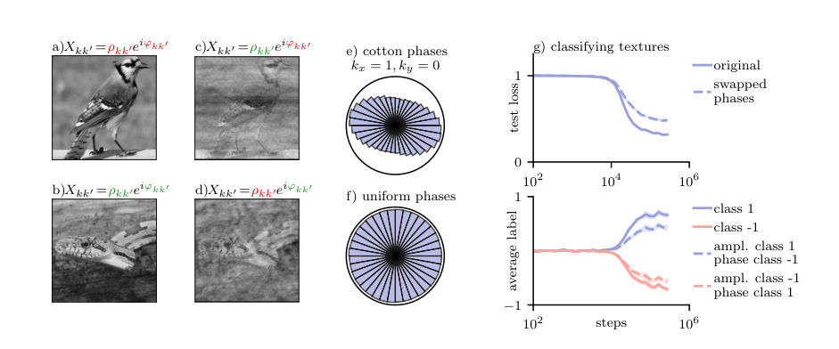
Fig 1. Figure 1: Learning phase vs amplitude information. a-b) Pictures of a bird and a snake from ImageNet. c-d) Fourier image reconstruction with phases φkk′ from the “bird” and amplitudes ρkk′ from the “snake” and vice versa. e) Phases of images from the “cotton” class of the ALOT texture dataset for patches of size 16 × 16 along the first Fourier mode in the x-direction. f) Uniform phase distribution. g) Performance of a classifier trained to distinguish between two texture classes: “cotton” vs. “lace” on patches of size 16 × 16 of the ALOT dataset. Top: test loss over training steps, on the original data ( ) and on data where phase information has been swapped between classes ( ). Bottom:...
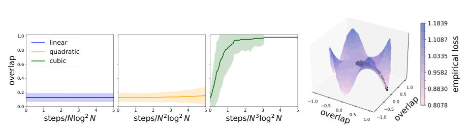
Fig 2. Figure 2: Performance of SGD in classifying isotropic inputs on the Fourier data model. (Left) We run online SGD applied to the correlation loss (1) with isotropic inputs drawn from the Fourier data model (3). SGD does not weakly recover the signal at linear ( ) or quadratic ( ) sample complexity, whereas it converges to the subspace spanned by the DFT phase vectors in the cubic ( ) regime. On the y-axes, we see the norm of the projection of the perceptron weight in the said “non-Gaussian” subspace. (Right) Empirical loss landscape as a function of the overlaps between the weight vector and the DFT phase vectors, i.e. w · u and w · v. Additionally, we display one run of SGD (•) converging...
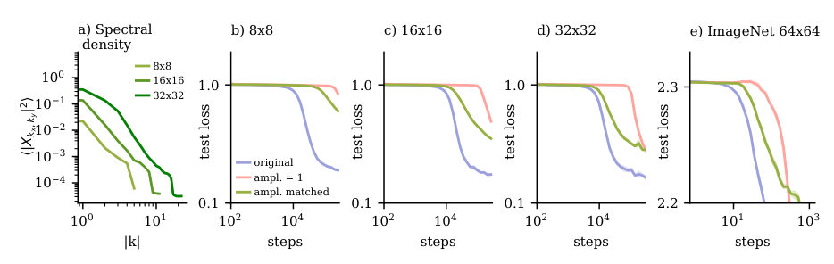
Fig 3. Figure 3: Shared principal subspace speeds up learning. a) Average squared Fourier amplitudes of image patches of “cotton” class from ALOT texture dataset, averaged over wave vectors of equal length |k| = q
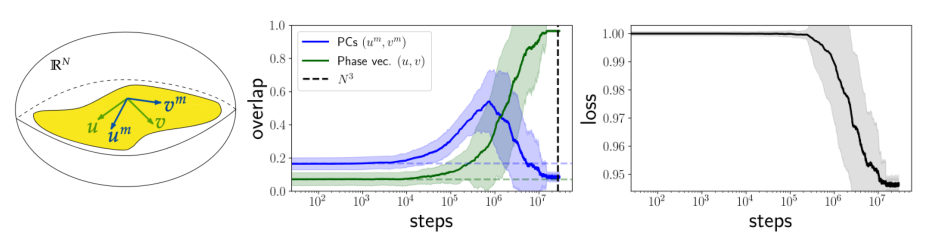
Fig 4. Figure 4: Performance of SGD in classifying non-isotropic inputs on the Fourier data model. (Left) Cartoon of the principal subspace of power-law-decaying inputs sampled from the Fourier data model (3), spanned by the DFT phase vectors (u, v) and a finite number of other principal components (um, vm). (Middle) At first, online SGD quickly recovers the whole principal subspace, including the DFT phase vectors. Then, the other principal components PCs ( ), which are not useful for classification, are forgot and SGD converges within n ≲N3 steps to the subspace spanned by the DFT phase vectors ( ). Compare with Fig. 2, where no recovery happens within cubic sample complexity. Here, N = 300....
Summary. The paper explains why deep neural networks can efficiently learn complex natural images despite the inherent difficulty of learning phase information. It shows that the power-law frequency spectrum of natural images acts as a mechanism to accelerate the learning of higher-order correlations.
Why it may be interesting. not directly relevant
Detailed structure
Main problem. Investigating the simplicity bias in neural network learning dynamics, specifically how networks prioritize learning amplitude (pair-wise) information before phase (higher-order) information.
Main result. Proves that learning phase information is computationally hard (cubic sample complexity) for isotropic inputs, but power-law decaying spectra in natural images dramatically accelerate this learning process.
Method. Uses a Fourier-based synthetic data model, Hermite polynomial expansions of the loss and likelihood ratio, and analysis of the stochastic dynamics of online SGD via the information exponent and population drift.
Model / system. A Fourier data model with translation-invariant, non-Gaussian inputs where class differences are encoded in the phases of the Discrete Fourier Transform, featuring both isotropic and power-law decaying covariance matrices.
Key observables. Test loss, average label assignment, overlaps with DFT phase vectors (alpha_u, alpha_v), and the information exponent (k*).
Important parameters / regimes. Sample complexity (n), dimension (N), power-law decay exponent (alpha), signal-to-noise ratio (beta), and learning rate (delta_N).
Assumptions / limitations. Activation functions are continuously differentiable and even; inputs are translation-invariant; analysis focuses on the high-dimensional limit (N to infinity).
Figures summary. Figure 1 demonstrates phase importance via image reconstruction; Figure 2 shows SGD failure/success in isotropic regimes; Figure 4 illustrates the principal subspace and loss landscape changes in power-law regimes.
Paper structure. The paper introduces the Fourier perspective, establishes the hardness of phase learning in isotropic settings, introduces the power-law model to show learning acceleration, and provides theoretical proofs and experimental validation on ImageNet/CIFAR.
Abstract
Neural networks trained with gradient-based methods exhibit a strong simplicity bias: they learn simpler statistical features of their data before moving to more complex features. Previous analyses of this phenomenon have largely focused on settings with (quasi-)isotropic inputs. In this work, we study the simplicity bias from a Fourier perspective, which allows us to include two key features of natural images in the analysis: approximate translation-invariance and power-law spectra. We first show experimentally that simple neural networks trained on image classification tasks first rely on amplitude information -- related to pair-wise correlations between pixels -- before exploiting phase information, which encodes edges and higher-order correlations. In view of this, we introduce a synthetic data model for translation-invariant inputs that allows precise control over amplitudes and phases while remaining tractable. We rigorously establish that for isotropic and high-dimensional inputs, classification based on phase information alone is a genuinely hard task: online stochastic gradient descent (SGD) cannot distinguish the structured inputs from noise within $n \ll N^3$ steps, but needs at least $n \gg N^3 \log^2{N}$ steps. In contrast, we show both experimentally and theoretically that power-law spectra can dramatically accelerate the speed of learning phase information, even if the spectra do not help with classification. Simulations with two-layer networks trained on textures and with deep convolutional networks on ImageNet and CIFAR100 confirm this non-trivial interaction between amplitudes and phases, providing mechanistic insights into how deep neural networks can learn natural image distributions efficiently.
Authors: Abhishek Sawaika, Udaya Parampalli, Rajkumar Buyya Type: theory · Category: quantum information and computing · PDF:https://arxiv.org/pdf/2605.17944v1 Analysis basis: full PDF text, analyzed in chunks
↔ Scroll figures horizontally
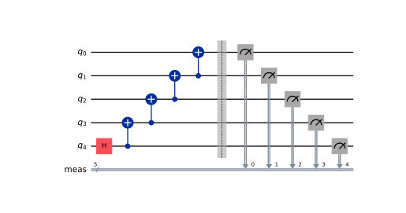
Fig 1. Fig. 1: A sample quantum circuit (GHZ state preparation) with 5 qubits, depth=6, 1 single qubit operation (H), four 2- qubits operations (CNOT) and 5 measurements, representing a quantum program.
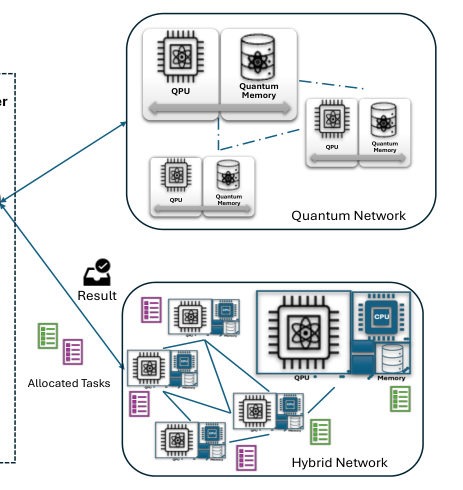
Fig 2. Fig. 2: System Architecture
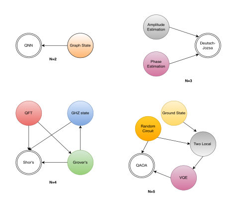
Fig 3. Fig. 3: Sample quantum workflows of different sizes, where ’N’ denote the number to tasks in each workflow.
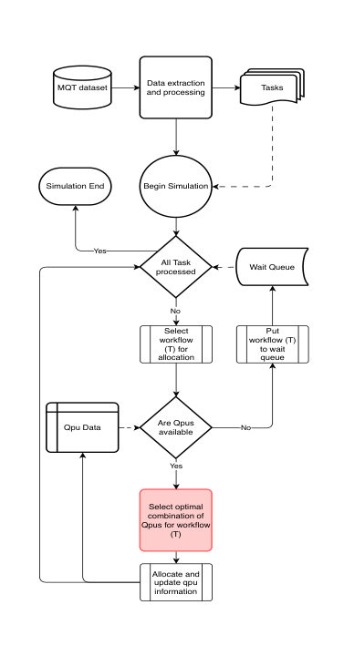
Fig 4. Fig. 4: Process pipeline for experimental simulation
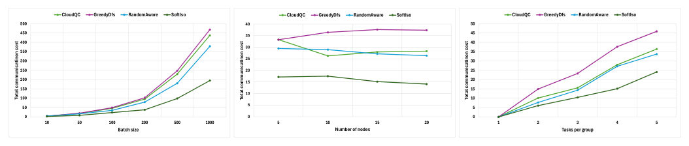
Fig 5. Fig. 5: Trends for communication cost by (a) workload size for allocation, (b) number of nodes in the network and (c) distinct tasks per workflow
Summary. This paper proposes new algorithms for managing distributed quantum computing tasks in the cloud. By optimizing for fidelity, time, and network costs, the methods significantly reduce delays and communication overhead in NISQ-era distributed networks.
Why it may be interesting. not directly relevant
Detailed structure
Main problem. Efficient resource allocation for distributed quantum workflows in cloud-based environments, specifically addressing the limitations of priority-based protocols in handling large-scale, multi-task applications.
Main result. The proposed SoftIso and RandomAware algorithms achieve significant improvements in execution time (~5%), communication overhead (~30%), and wait time (~40%) compared to existing methods like CloudQC.
Method. The study introduces SoftIso, an extended graph isomorphism-based matching algorithm with early stopping, and RandomAware, a randomized selection algorithm, to optimize a multi-objective cost function.
Model / system. A hybrid classical-quantum network architecture consisting of a Quantum Resource Manager and distributed quantum nodes (QPUs) with specific error models, connectivity, and quantum memory.
Key observables. Fidelity, execution time, communication overhead, wait time, and task completion percentage.
Important parameters / regimes. Qubit count, circuit depth, gate counts (1-qubit and 2-qubit), readout error, CLOPS, and network latency.
Assumptions / limitations. The study assumes a hybrid quantum-classical network rather than a purely quantum network and focuses on allocating standalone programs rather than partitioning single large circuits.
Figures summary. Figure 1 shows a GHZ state circuit; Figure 2 depicts the cloud service architecture; Table I compares the proposed method to others; Figures 5-9 show trends in communication cost, fidelity, workload distribution, and execution/wait times.
Paper structure. The paper defines the scientific problem, establishes the system architecture and mathematical model, introduces the proposed SoftIso and RandomAware algorithms, details the simulation framework using IBM hardware data, and concludes with performance analysis and scalability results.
Abstract
Rapid advancements in cloud based platforms providing access to quantum computing capabilities have opened up several challenges for efficient usage of these highly delicate and costly devices. Although most of the current systems use a priority based access protocol, they are unable to fully support reliable, efficient, and scalable execution of larger-scale applications. To overcome this limitation, we propose a comprehensive solution for efficient allocation of quantum programs to appropriate quantum devices, considering all the relevant cost metrics into account including, fidelity, execution time and communication overhead. We also formulate use-cases for distributed quantum workflow and propose modified graph based algorithms to solve for allocation of such use-cases, assuming a hybrid classical-quantum network. Since hardware advancements in large standalone devices is an ongoing process, it is critical to investigate such distributed workflows to maximize the best utilization of current NISQ devices. Our empirical study shows that the proposed techniques perform better than state-of-the-art methods for almost all evaluation parameters, with average improvements of approximately $5\%$ in execution time, $30\%$ in communication overhead, $40\%$ in wait time and $2\%$ in fidelity, providing better solutions to efficient allocation strategies.
Authors: Tianyu Li, Xin Tang, Sheng Liu, Haiping Hu Type: theory · Category: disordered systems and neural networks · PDF:https://arxiv.org/pdf/2605.17953v1 Analysis basis: full PDF text, analyzed in chunks
↔ Scroll figures horizontally
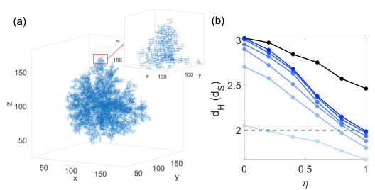
Fig 1. FIG. 1. (a) Fractal structure for η = 1. (b) Hausdorff di- mension dH and spectral dimension dS as functions of the parameter η. The black line denotes the Hausdorff dimension dH, which is independent of p. The blue curves represent the spectral dimension dS for p = 0, 0.2, 0.4, 0.6, 0.8, and 1, shown with a gradient of blue shades from light to dark. The system size are taken as N = 80000.
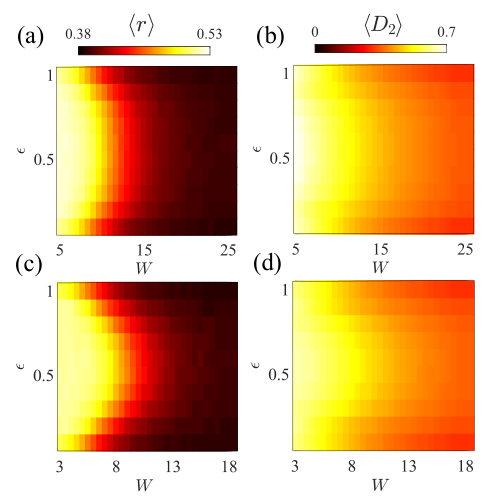
Fig 2. FIG. 2. The mobility edges. The presence of mobility edges in the energy spectra of the model with (η, p) = (0.2, 1) (a),(b) and (η, p) = (0, 0.4) (c),(d). (a)(c) The average ratio of level spacings ⟨r⟩and (b)(d) average Fractal demension ⟨D2⟩ with respect to the disorder strength and eigenenergies. The eigenenergies are divided into ten equal segments and rescaled to the interval ϵ ∈[0, 1]. The averages are taken within each segment and over 200 disorder realizations. The system size are taken as N = 5000.
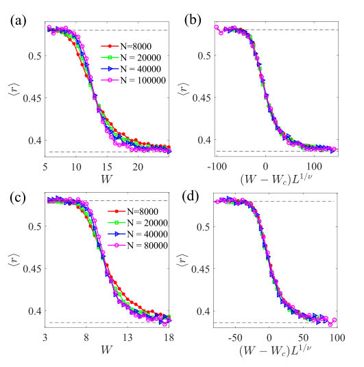
Fig 3. FIG. 3. Finite-size scaling of the level statistics. The average ratio of level spacings ⟨r⟩as a function of disorder strength W for different system sizes: (a) (η, p) = (0.2, 1) and (c) (η, p) = (0, 0.4). Panels (b) and (d) show the corresponding finite-size scaling collapses of (a) and (c), respectively, with the scaling variable L = N 1/dS, where N is the number of sites. For (a) and (b), the extracted critical disorder strength and correlation-length exponent are Wc = 12.9 ± 0.1 and ν = 1.54 ± 0.04, with spectral dimension dS = 2.89. For (c) and (d), corresponding to (η, p) = (0, 0.4), we obtain Wc = 10.2 ± 0.2 and ν = 1.59 ± 0.06, with dS = 2.90. The averages are taken over the central...
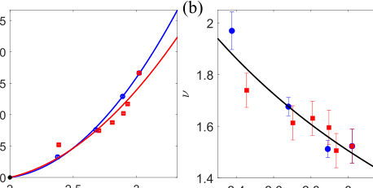
Fig 4. FIG. 4. (a) Anderson transition point Wc as a function of the spectral dimension. The blue circles correspond to results obtained at fixed p = 1, with η = 0, 0.2, 0.4, and 0.6. The red squares correspond to results at fixed η = 0, with p = 0.1, 0.2, 0.3, 0.4, 0.5, and 1. The blue and red curves represent quadratic fits to the respective datasets, with Wc = 2.83(dS − 2) + 13.11(dS −2)2 and Wc = 4.71(dS −2) + 9.23(dS −2)2
Summary. This paper explores how the Anderson localization transition behaves in non-integer dimensions using a tunable 3D fractal lattice model. It demonstrates that the spectral dimension is the key driver of the transition's universality class and provides a quantitative scaling relation for the critical exponent. The findings offer a new framework for studying quantum criticality in complex, non-Euclidean geometries.
Why it may be interesting. not directly relevant
Detailed structure
Main problem. The study investigates the nature of the Anderson transition and the existence of mobility edges in 3D fractal lattices with continuously tunable spectral dimensions.
Main result. The spectral dimension (ds) primarily determines the universality class of the Anderson transition, with the critical exponent (nu) following an approximate inverse dependence on ds.
Method. Large-scale finite-size scaling analysis of the level-spacing ratio and mean fractal dimension using numerical simulations of the discrete Laplace equation and Anderson Hamiltonian.
Model / system. A family of 3D fractal lattices generated via a dielectric breakdown model (NPW model) with a Hamiltonian featuring hopping amplitude t=1 and uniform onsite disorder W.
Key observables. Average level-spacing ratio , mean fractal dimension , critical disorder strength Wc, and critical exponent nu.
Important parameters / regimes. Spectral dimension (ds), Hausdorff dimension (dH), disorder strength (W), and growth parameters (eta and p).
Assumptions / limitations. The system is studied in the thermodynamic limit via finite-size scaling; the lattice is constructed using a specific dielectric breakdown model.
Figures summary. The figures illustrate the evolution of the level-spacing ratio and mean fractal dimension across different disorder strengths and lattice configurations, demonstrating the transition and mobility edges.
Paper structure. The paper introduces the fractal lattice construction, describes the numerical methods for dimension extraction and localization analysis, presents the results regarding the Anderson transition and mobility edges, and discusses the scaling relations and universality.
Abstract
Anderson localization is fundamentally controlled by dimensionality, yet the nature of the Anderson transition in continuously tunable noninteger dimensions remains largely unexplored. Here, we introduce a family of three-dimensional fractal lattices with continuously tunable spectral dimension $d_s\in[2,3]$, providing a controlled platform for studying localization physics beyond integer dimensions and across the lower critical dimension $d_s=2$. Using large-scale finite-size scaling analysis, we systematically investigate the Anderson transition and identify mobility edges throughout the fractal family. The critical disorder strength evolves continuously from $0$ to $16.6$ as the spectral dimension increases from $2$ to $3$. We show that the spectral dimension predominantly governs the universality class of the transition, while the precise critical point is additionally influenced by microscopic geometric details of the underlying fractal lattice. The critical exponent exhibits an approximate inverse dependence on $d_s$, providing quantitative insight into scaling theory in noninteger dimensions. Our results establish tunable fractal lattices as a versatile framework for exploring localization and quantum critical phenomena beyond conventional integer-dimensional systems.
Authors: Yan Ru Pei Type: theory · Category: disordered systems and neural networks · PDF:https://arxiv.org/pdf/2605.17338v1 Analysis basis: full PDF text, analyzed in chunks
↔ Scroll figures horizontally
Fig 1. Figure 1: The box-resampling lemma. The event A3(Λ) is expressed using exterior arms and is therefore measurable from FΛc. Conditional on this outside event, Bs(Λ) has positive probability and merges all exterior blue components in the overlap class q = s that touch ∂Λ. The dotted blue arms indicate exterior blue components in the opposite overlap class; they are shown only as context for the chosen q = s resampling.
Summary. This paper provides a rigorous mathematical upper bound on the number of infinite clusters in the geometric representation of a spin glass. It proves that the number of infinite blue clusters is at most two, supporting the two-cluster picture suggested by mean-field theory and numerical simulations.
Why it may be interesting. not directly relevant
Detailed structure
Main problem. Determining the geometric structure and the maximum number of infinite blue clusters in the Chayes-Machta-Redner (CMR) representation of the Edwards-Anderson spin glass.
Main result. Proves that there are at most two infinite blue clusters in the CMR representation; if two exist, they must belong to opposite overlap-parity classes and reside within the same infinite grey cluster.
Method. Rigorous mathematical proof using Bayesian resampling of couplings, finite-box merge operations, mass-transport bounds on ends of subgraphs, and Peierls-type estimates.
Model / system. The Edwards-Anderson Ising spin glass model on a hypercubic lattice Z^d, characterized by random i.i.d. couplings J_e that are continuous at zero and two-sided.
Key observables. Number of infinite blue clusters, overlap parity classes, grey cluster percolation, and spin overlap parameter q.
Important parameters / regimes. Inverse temperature beta, dimension d, and the overlap sign s in {+1, -1}.
Assumptions / limitations. Assumes translation-invariant joint Gibbs measures; the results provide an upper bound on cluster multiplicity but do not prove the existence of a spin-glass phase transition.
Figures summary. Figure 1 illustrates the Box-resampling lemma, showing how exterior blue components in a specific overlap class are merged through a resampled finite box.
Paper structure. The paper establishes a joint Gibbs measure for the CMR representation, uses Bayesian resampling to prove grey cluster percolation and uniqueness, and then applies a box-resampling lemma and mass-transport bounds to constrain the number of blue clusters.
Abstract
The two-replica Chayes-Machta-Redner (CMR) representation is one of the main proposed geometric signatures of spin-glass order in the short-range Edwards-Anderson model. Mean-field arguments and recent numerics suggest that the low-temperature phase should exhibit two macroscopic blue clusters carrying opposite overlap signs. We prove a rigorous structural constraint in this direction. For any translation-invariant joint Gibbs measure on disorder, two spin replicas, and CMR bond variables on Z^d, the blue subgraph contains at most two infinite connected components; if two exist, then they lie in a common infinite grey cluster and belong to opposite overlap-parity classes. The main obstacle is that the blue-bond process is neither insertion-tolerant nor positively associated, so the usual Burton-Keane and random-cluster arguments do not apply. We circumvent this by working in the full joint measure and using a finite-box merge operation together with the mass-transport bound on ends of translation-invariant subgraphs. As auxiliary input, we establish finite energy and a percolation transition for the grey subgraph via Bayesian resampling of couplings and a parity-based Peierls estimate. These results do not prove the existence of infinite blue clusters or a spin-glass phase transition, but they give a rigorous upper bound compatible with the two-cluster picture for short-range spin glasses.
Authors: Jan Kessler, Thomas D. Kühne Type: theory · Category: numerical methods · PDF:https://arxiv.org/pdf/2605.17083v1 Analysis basis: full PDF text, analyzed in chunks
↔ Scroll figures horizontally
Fig 1. FIG. 1. Optimization protocol used for the neural-network wave functions.Fig 2. FIG. 3. Geometry and parametrizations of the rectangular H4 benchmark system.Fig 3. Figure 2b resolves the remaining deviations. The rela- tive error increases below 2 Bohr, i.e., around and below the equilibrium distance of about 1.4 Bohr, reaching ap- proximately 0.0025% or 0.025 mHa. At larger separations the error remains close to 0.001%. This behavior dif- fers from many conventional single-reference electronic- structure methods, which are often accurate near equi- librium but deteriorate for stretched H2 as static correla- tion becomes important [19]. For a two-electron singlet, however, this distinction is less severe than in larger sys- tems: in a finite orbital basis, the coupled-cluster singles- and-doubles excitation manifold already spans the full-CI space...Fig 4. FIG. 2. H2: VMC energies (a) and relative energy differences (b) of NNAGP + all-body-NNJF for different H–H distances, compared with reference energies [44].Fig 5. FIG. 4. H4: VMC energies of NNWFs for different H–H distances in the x direction, with ry = 2.4 Bohr. FCI energies [5] are shown as reference values.
Summary. The authors develop a new 'basis-free' neural-network wave function that uses neural networks to replace traditional basis sets in an AGP-Jastrow ansatz. This method allows researchers to clearly distinguish between errors caused by imperfect nodal surfaces and those caused by insufficient dynamical correlation. It achieves near-exact accuracy for simple systems and provides a scalable framework for studying electronic correlation.
Why it may be interesting. It presents a highly interpretable neural-network wave function that avoids the 'black-box' nature of other architectures by explicitly separating the nodal surface from correlation recovery, providing a diagnostic tool for many-body wave function accuracy.
Detailed structure
Main problem. The challenge of accurately describing electronic ground-state wave functions by balancing the treatment of fermionic antisymmetry, dynamical correlation, and static (multireference) correlation without the computational bottleneck of traditional basis-set expansions.
Main result. The proposed basis-free Jastrow-AGP ansatz achieves sub-millihartree accuracy for H2 and compact H4 systems, successfully distinguishing between errors from the Jastrow factor (dynamical) and the AGP nodal surface (static).
Method. Variational Monte Carlo (VMC) optimization of a neural-network wave function that replaces conventional basis sets with feed-forward neural networks for both the geminal (AGP) and Jastrow components.
Model / system. The study uses the hydrogen molecule (H2) and the rectangular hydrogen tetramer (H4) as benchmark systems to test the balance of dynamical and static correlation.
Key observables. Electronic ground-state energies, relative energy differences compared to reference data (FCI, DMC, FermiNet), and CPU time for optimization.
Important parameters / regimes. Neural network hidden units (N_G, N_J), nuclear coordinates (bond distances r_x, r_y), and cusp-correction parameters (b_ee, b_en).
Assumptions / limitations. The accuracy is limited by the fixed nodal surface of the AGP part; the all-body Jastrow factor relies on an approximate exchange symmetry that emerges during minimization.
Figures summary. Figure 1 shows the optimization protocol; Figure 2 displays H2 dissociation energy curves; Figure 3 illustrates the H4 geometry; Figure 4 shows H4 energy as a function of distance; Figure 6 compares energy errors vs. network size; Figure 7 shows CPU time scaling with network size.
Paper structure. The paper introduces a new neural-network wave function ansatz, describes the architecture and optimization protocol, presents validation on H2, uses H4 as a benchmark for correlation types, analyzes scaling and efficiency, and discusses limitations regarding nodal flexibility and size consistency.
Abstract
Neural-network quantum states offer a flexible route to compact many-electron wave functions, but their practical accuracy depends strongly on how fermionic antisymmetry, electron correlation, and optimization noise are treated. Here we combine an antisymmetrized geminal power (AGP) determinant with feed-forward neural networks that replace conventional basis-set expansions in the geminal and in two Jastrow-factor constructions. The resulting basis-free Jastrow--AGP ansatz is optimized by variational Monte Carlo and is designed to separate two tasks: the AGP part defines the nodal surface, while the neural-network Jastrow factor recovers dynamical correlation at fixed nodes. This separation makes it possible to distinguish errors associated with dynamical correlation from those caused by static, multireference correlation. Applications to the hydrogen molecule and the rectangular hydrogen tetramer show sub-millihartree accuracy when the AGP nodes are adequate, and expose the residual nodal limitation near the large-radius square geometry of the hydrogen tetramer. These results clarify where neural-network building blocks can improve a compact geminal ansatz and where additional nodal flexibility is required.
Authors: John Sous Type: theory · Category: strongly correlated electrons · PDF:https://arxiv.org/pdf/2605.16625v1 Analysis basis: full PDF text, analyzed in chunks
↔ Scroll figures horizontally
Fig 1. Figure 1: Schematic illustration of the breakdown of Migdal–Eliashberg theory at inter- mediate λ and the resulting bound Tc ≲Ω/10 on phonon-mediated superconductivity out of a Fermi liquid.Fig 2. Figure 2: Density coupling: a phonon ˆXi attached to each lattice site couples to the local electron density ˆni. Adding an electron displaces the oscillator and digs a deep self-trapping well; the resulting polaron, and the bipolaron formed from two of them, is heavy.Fig 3. Figure 3: Bipolaron effective mass m⋆ BP/(2me) in the one-dimensional site-Peierls model (blue) compared with the Holstein model (red), as a function of the dimensionless electron– phonon coupling λ at Ω∼W. The Peierls bipolaron remains light up to and beyond λ = 2, while the Holstein bipolaron is exponentially heavy. Adapted from Ref.19Fig 4. Figure 4: Cartoon of the phonon-mediated electron-pair-hopping process generated by the site-Peierls coupling of Eq. (3) in the antiadiabatic limit Ω/t ≫1. A virtual phonon emitted by one electron during a hop is absorbed by a neighboring electron during a second hop, with the net effect of moving a singlet pair as a unit.Fig 5. Figure 5: Left: Cartoon of the bond-Peierls model: oscillators sit on the bonds of the square lattice (open ions), and their displacements ˆX⟨i,j⟩modulate the hopping of electrons between neighboring sites (filled circles). Right: The bond-Peierls coupling in the iron pnictides. Pnictogen oscillations out of the Fe plane modulate the electron tunneling between neighboring iron atoms; destructive interference between the direct dxy–dxy hop and the indirect Fe–pnictogen–Fe path produces a small net hopping with a large coupling to the pnictogen displacement. Adapted from Refs.32
Summary. This review explores a mechanism for high-temperature superconductivity where phonons modulate electron hopping instead of density. By using the bond-Peierls model, the author shows that superconductivity can bypass the traditional temperature limits because the resulting bipolarons remain light and mobile. This provides a theoretical framework for understanding high-Tc in materials like iron-based pnictides.
Why it may be interesting. not directly relevant
Detailed structure
Main problem. Investigating whether phonon-mediated superconductivity can exceed the conventional transition temperature ceiling (Tc < Omega/10) by avoiding the formation of heavy, immobile bipolarons.
Main result. The author demonstrates that in the bond-Peierls model, where phonons modulate electron hopping rather than density, light bipolarons form an s-wave superconductor with a Tc that significantly exceeds the conventional bound and is robust against Coulomb repulsion.
Method. The study utilizes sign-problem-free quantum Monte Carlo simulations, semi-classical instanton analysis to calculate effective mass, and second-order perturbation theory in the antiadiabatic limit.
Model / system. The primary model is the bond-Peierls (or SSH) model on square and cubic lattices, where lattice distortions modulate the electron hopping amplitude, contrasted with the standard Holstein density-coupled model.
Key observables. Transition temperature (Tc), bipolaron effective mass (m*BP), bipolaron binding energy (Delta_BP), and bipolaron mean squared radius (R2_BP).
Important parameters / regimes. Dimensionless electron-phonon coupling (lambda), phonon frequency (Omega), hopping amplitude (t), adiabaticity ratio (t/Omega), and Hubbard repulsion (U).
Assumptions / limitations. The analysis assumes a dilute liquid of bipolarons and uses a linearized expansion of hopping about equilibrium; it neglects higher-order interaction terms that might affect the density limit.
Figures summary. Figure 1 shows the breakdown of Migdal-Eliashberg theory; Figure 2 illustrates the Holstein model; Figure 3 compares bipolaron effective mass; Figure 5 provides a cartoon of the bond-Peierls model applied to iron pnictides.
Paper structure. The paper begins by defining the conventional Tc ceiling, introduces the Peierls/bond-Peierls model as a solution, presents numerical QMC results showing light bipolarons and high Tc, discusses the role of Coulomb repulsion, and concludes with material design principles.
Abstract
Phonon-mediated superconductivity is conventionally thought to be capped at a transition temperature $T_{\mathrm{c}}$ no larger than roughly one-tenth of the phonon frequency $Ω$, a bound rooted in the breakdown of Migdal-Eliashberg theory at intermediate coupling and in the heaviness of bipolarons formed in standard models with phonons that couple to the electron density. In this review I describe a route to phonon-mediated high-$T_{\mathrm{c}}$ superconductivity that bypasses this bound. The key ingredient is a class of electron-phonon couplings in which lattice distortions modulate the electron hopping and therefore its kinetic energy rather than its potential energy, known as the Peierls model (also known as Su-Schrieffer-Heeger model). In these models phonon exchange generates an interaction that binds two electrons into a small but unusually light bipolaron. Using sign-problem-free quantum Monte Carlo simulations of a bond-Peierls model on the square and cubic lattices, my collaborators and I have shown that a dilute liquid of such bipolarons forms an $s$-wave superconductor with a $T_{\mathrm{c}}/Ω$ that significantly exceeds the conventional bound, that this conclusion is robust against screened Coulomb repulsion, and that $T_{\mathrm{c}}/Ω$ -- despite being reduced -- remains above bound in presence of strong long-range Coulomb repulsion. A semi-classical instanton analysis explains why, at strong coupling, bipolarons in models with phonon-modulated hopping are lighter than their density-coupled (Holstein) counterparts. I close with a discussion of materials in which this physics may be operative, in particular the iron-based pnictide superconductors, and of design principles that follow from it.
Authors: Yi Zhou Type: both · Category: strongly correlated electrons · PDF:https://arxiv.org/pdf/2605.17030v1 Analysis basis: full PDF text, analyzed in chunks
↔ Scroll figures horizontally
Fig 1. FIG. 2. Canonical Knight-shift ellipsoids at T = 0 in the strong-locking regime. The faint dashed sphere is the normal-state KN reference; the blue solid ellipsoid is the T = 0 shape with semi-axes Ki(0)/KN = 1 −πi, so πi = 1 collapses the ellipsoid along axis i and πi = 0 leaves it touching the reference sphere. (a) Singlet with strong 3D SOC at the simplex barycenter, isotropically suppressed to 2Fig 2. FIG. 3. Simplex of allowed T = 0 Knight-shift ellipsoids in the strong-locking regime, parametrized by the eigenvalues (π1, π2, π3) of Π with P
Summary. The paper introduces a geometric framework to classify pairing symmetries in noncentrosymmetric superconductors by relating the zero-temperature Knight shift to the spin-locking texture of the Fermi surface. It provides a set of experimental protocols to distinguish between various singlet and triplet pairing states. The theory is validated by analyzing NMR data on K2Cr3As3, revealing a specific c-axis spin-locking mechanism.
Why it may be interesting. not directly relevant
Detailed structure
Main problem. Determining the pairing symmetry and spin-orbit coupling (SOC) texture in noncentrosymmetric superconductors using the residual T=0 Knight shift.
Main result. Derivation of a central theorem where the T=0 Knight shift tensor is determined solely by the Fermi-surface average of the spin-locking direction, independent of pairing symmetry or gap magnitude, and application to K2Cr3As3 to identify a c-axis locking texture.
Method. Use of a Bogoliubov sum rule within a BdG framework to establish geometric identities and the development of six experimental protocols for diagnosing pairing classes via a Knight-shift ellipsoid.
Model / system. Noncentrosymmetric superconductors, specifically the K2Cr3As3 system, modeled using a single-band unitary Bogoliubov-de Gennes (BdG) framework with antisymmetric spin-orbit coupling.
Key observables. Residual T=0 Knight shift tensor, spin susceptibility, spin-lattice relaxation rate (1/T1), and the Knight-shift ellipsoid.
Important parameters / regimes. Spin-locking direction (n_k), SOC strength (lambda), Zeeman field (h), and the projection tensor (Pi_munu).
Assumptions / limitations. The primary derivation assumes the strong-locking regime and unitary pairing; the application assumes a single-band model and hyperfine-invariant coupling.
Figures summary. Figure 4 shows a numerical cross-check of the derived closed-form theory against digitized endpoints of s-wave curves, demonstrating high precision.
Paper structure. The paper establishes a central Bogoliubov sum rule, derives static bounds and the Knight-shift ellipsoid geometry, explores departures in intermediate SOC and finite Zeeman fields, develops dynamical counterparts (FGT sum rule), and concludes with experimental protocols applied to K2Cr3As3 data.
Abstract
We show that the residual $T=0$ Knight shift of a noncentrosymmetric superconductor in the strong-locking regime is completely determined by a single Fermi-surface average -- the projector $Π_{μν}=\langle\hat n_μ\hat n_ν\rangle_{\rm FS}$ of the spin-locking direction $\hat n_{\mathbf{k}}$ -- giving the tensor identity $χ_{μν}(0)=χ_{N}[δ_{μν}-Π_{μν}]$ independently of pairing symmetry, gap magnitude, and Fermi-surface shape. Because $\mathrm{Tr}\,Π=1$, the three principal Knight shifts at $T=0$ lie on a two-dimensional simplex of locking textures, the \emph{Knight-shift ellipsoid}, whose vertices, edges, and interior classify every canonical pairing class. The identity follows from a Bogoliubov sum rule, $\sum|M_{ph,O}|^{2}+\sum|M_{pp,O}|^{2}=\mathrm{Tr}_{s}(O^{2})$, valid at every momentum for every Hermitian single-particle operator $O$ as the BdG-doubled form of unitary invariance. Around the central theorem we develop controlled departures (a closed-form $s$-wave SOC interpolation, a finite-field strong-locking identity), a dynamical counterpart (a spin Ferrell--Glover--Tinkham sum rule and a rigorous vanishing-projection theorem for $1/T_{1}$), and a decoupled-pocket multiband baseline, packaged into six experimental protocols. Applied to the $^{75}$As NMR data on K$_{2}$Cr$_{3}$As$_{3}$, the observed ellipsoid sits at the oblate-axial vertex $(0,0,1)$ and saturates the trace bound; the decoupled-pocket SOC-texture baseline is excluded by $\sim 0.5$ in normalized units, requiring a common $\hat c$-axis locking on all three pockets, and the suppression of $1/T_{1}\parallel\hat c$ is identified, via the vanishing-projection theorem, as a fingerprint of finite-$\mathbf{q}$ ferromagnetic spin-fluctuation gap formation.
Authors: Younes Javanmard, Sina Kazemian Type: theory · Category: quantum information and computing · PDF:https://arxiv.org/pdf/2605.16749v1 Analysis basis: full PDF text, analyzed in chunks
↔ Scroll figures horizontally
Fig 1. FIG. 1. Illustrative four-qubit QFT decomposition. The finite QFT is the spectral layer used by the block-encoding, but by itself it imposes periodic rather than open geometry.Fig 2. FIG. 2. Native QFT block-encoding of the periodic circulant surrogate e A(N) α,h. The frequency oracle encodes the fractional symbol as an ancilla amplitude.Fig 3. FIG. 3. Compressed open-boundary block from zero-padding. The size-M QFT circuit is periodic on the padded register, while compression back to the first N coordinates gives (A(N) α,h + E(M))/λmax.Fig 4. FIG. 4. Matrix structure for N = 64, h = 1, and α = 1.5. The third panel shows the absolute aliasing error on a logarithmic color scale; the highlighted corners are the wrap-around regions.Fig 5. Figure 5 gives a direct functional comparison using three bounded-domain test functions also used in Ref. [19]. We compare the open-boundary Toeplitz target, the native QFT-circulant surrogate, and the zero-padded compressed operator. The top row overlays the operator outputs, while the bottom row shows the pointwise absolute error on a logarithmic scale. The native QFT curve plays the role of a periodic Fourier method and displays boundary artifacts, whereas the padded construction follows the open-boundary target.
Summary. This paper provides a way to use the Quantum Fourier Transform to simulate fractional diffusion processes on bounded domains without the errors caused by periodic wrap-around. By padding the quantum register with zeros, the authors show how to effectively implement open boundary conditions for the fractional Laplacian. This serves as a fundamental building block for more complex quantum algorithms for solving partial differential equations.
Why it may be interesting. not directly relevant
Detailed structure
Main problem. Standard Quantum Fourier Transform (QFT) circuits naturally implement periodic boundary conditions, which introduces artificial 'wrap-around' aliasing errors when trying to simulate the fractional Laplacian on bounded domains with open boundaries.
Main result. The authors prove that by zero-padding the input state into a larger M-point QFT register and then compressing it back, one can implement the open-boundary Toeplitz operator with a controllable error that vanishes as the padding increases.
Method. The method uses a padding-and-compression mechanism combined with a block-encoding of the Fourier symbol via a diagonal spectral oracle and controlled Ry rotations.
Model / system. The semi-discrete fractional Laplacian operator (with symbol |xi|^alpha) on bounded domains with open, zero-extension boundary conditions.
Key observables. spectral norm of the error matrix E(M), gate complexity, and the decay of the convolution kernel tail.
Important parameters / regimes. fractional order alpha, grid spacing h, physical dimension N, padded dimension M, and the decay rate r_alpha = min(2, 1 + alpha).
Assumptions / limitations. The method assumes a sufficiently large padding (M >= 2N) and relies on the specific decay properties of the kernel coefficients to bound the error.
Figures summary. Figure 4 compares the matrix structures of Open Toeplitz vs. QFT circulant operators highlighting aliasing; Figure 5 shows the functional accuracy of the padded method compared to the target operator.
Paper structure. The paper identifies the boundary mismatch problem, provides a mathematical proof of the aliasing identity, introduces the padding-and-compression construction, performs error analysis using the Schur test, and demonstrates a concrete quantum oracle implementation.
Abstract
We study the quantum Fourier transform (QFT) block-encoding of the semi-discrete fractional Laplacian on bounded domains with open, zero-extension boundary conditions. In the notation of the main construction, the target operator is the finite Toeplitz truncation \(A^{(N)}_{α,h}\) obtained from the full-lattice semi-discrete operator with symbol \(|ξ|^α\). A finite QFT register, however, diagonalizes circulant matrices rather than Toeplitz truncations. The native QFT circuit therefore implements a periodic surrogate \(\widetilde A^{(N)}_{α,h}\), not the open-boundary operator. We identify this mismatch through an exact Toeplitz-to-circulant aliasing identity. To recover the open-boundary action, we zero-pad the state into a larger \(M\)-point QFT register, apply the same Fourier-symbol block-encoding, and compress back to the physical subspace. The resulting compressed block satisfies \(P_{N\to M}^{\dagger}\widetilde A^{(M)}_{α,h}P_{N\to M} = A^{(N)}_{α,h}+E^{(M)}\), where \(E^{(M)}\) is controlled by the tail of the semi-discrete convolution kernel. Thus, the QFT layer implements the fractional symbol, while zero-padding supplies the open-boundary geometry. The construction is an operator-compilation primitive for boundary-aware quantum simulation rather than a complete PDE solver.
Authors: Dieter W. Heermann, Hagen Heermann Type: both · Category: disordered systems and neural networks · PDF:https://arxiv.org/pdf/2605.17334v1 Analysis basis: full PDF text, analyzed in chunks
↔ Scroll figures horizontally
Fig 1. Figure 1: PCMCI causal graph recovered from a representative cell (DV_US06 drive cycle, NMC chemistry). Node size is proportional to the number of significant outgoing links; edge width encodes the magnitude of the MCI partial-correlation coefficient at the dominant lag. Solid arrows indicate links significant at p < 0.05 (ParCorr, τmax = 3, rank transformation). The I →R and T →R links, absent under constant-current protocols, emerge when current variability CV(I) > 0.5, providing the EIS cross-validation targets discussed in Section 4.5. Note that the legend abbreviation are TE = Tranfer Entropy, NL = Nonlinear (CMIknn edges), HLT = Health scalars (internal resistance per cycle and...Fig 2. Figure 2: Health monitoring results for MATR LFP cell b1c5 (N = 1069 cycles, 18.6 % total fade, fc = 0.10). (A) Capacity state-of-health (%) versus cycle number. The red dashed line marks the 80 % retention threshold (cfail = 510). The shaded blue region represents the prognostic lead time of 402 cycles between the RWMHI alarm at cycle 108 and end-of-life. (B) Smoothed KSG transfer entropy traces (20-cycle rolling mean) for the three dominant directed pairs. TE(R→V ) rises monotonically from cycle 850 onward, tracking the strengthening impedance-to-voltage coupling as charge-transfer resistance grows. (C) First-alarm cycle for each detector at fc = 0.10, ordered from earliest to latest. The...Fig 3. Figure 3: Commissioning-fraction sensitivity by detector class. Solid lines: bundle-median first-alarm cycle; shaded bands: IQR (Q25–Q75). Bundles: Magnitude (Hotelling’s T 2, Window Distance, Wasserstein, Sliced Wasserstein, Deflation; blue), Predictive (GRU- CausalSSM, RC-VAE, SSM, VAE; orange), Complexity (Information Evolution, SVD, MI; green). Red dashed line: RWMHI fusion benchmark (T 2, WD, Deflation, RC-VAE, SSM), weighted by inverse CV. Annotations “n=k” indicate reduced bundle membership from missed detections; Isolation Forest (29–86 % detection) is excluded. NASA PCoE (168 cycles): all bundles are commissioning-invariant at cycles 61–62; this reflects both the rolling z-score...Fig 4. Figure 4: EIS cross-validation for the CALB L148N58A NMC prismatic cell across 11 aging checkpoints at three temperatures. (A) Nyquist spectra at 25 °C for early, mid, and late checkpoints. The overlapping traces confirm minimal aging (2.3 % capacity fade), ruling out progressive impedance growth as a confound. (B) Ohmic resistance R0 and charge-transfer resistance Rct at all three temperatures. Rct is strongly temperature-stratified (medians: 1.48, 0.63, 0.30 mΩat 10, 25, 40 °C) while R0 varies by only 20 % over the 30 °C range. (C) TE(R→V ) versus Rct across all checkpoint–temperature pairs. Temperature clusters are stratified in the same order as Rct, and within each temperature a...Fig 5. Figure 5: Arrhenius analysis of charge-transfer resistance for the CALB L148N58A NMC cell. (A) Arrhenius plot: ln(Rct) versus 1000/T (K−1) for median values at 10, 25, and 40 °C. Linear regression (solid line) gives activation energy Ea = 39.4 kJ mol−1 (r = 0.9999, p = 0.009), consistent with published NMC charge-transfer kinetics (35–50 kJ mol−1; Illig et al. 11, Hahn et al. 9). (B) Absolute values of Rct (red circles) and R0 (blue squares) versus temperature. The strong Arrhenius character of Rct contrasts with the weak temperature sensitivity of R0, confirming that the transfer-entropy stratification observed in Fig. 4C is driven by charge-transfer kinetics rather than bulk ionic...
Summary. This paper introduces CausalHealth, a framework that uses causal inference and information theory to detect early-stage lithium-ion battery degradation. By tracking changes in the directed information flow between battery parameters, the method provides highly reliable warnings long before traditional capacity-based thresholds are reached. The approach is physically validated by correlating statistical transfer entropy with electrochemical charge-transfer resistance.
Why it may be interesting. not directly relevant
Detailed structure
Main problem. Developing a robust, automated pipeline for the early detection of lithium-ion battery degradation that is physically interpretable and computable from routine telemetry without needing access to the degradation region.
Main result. The CausalHealth framework achieves 100% detection across various battery chemistries (LFP, LCO, NMC) and provides a significant prognostic lead time of up to 402 cycles before capacity failure, with the RWMHI fusion improving lead time by 15-52 cycles.
Method. The framework uses PCMCI for causal discovery and KSG-type Transfer Entropy to quantify information flow between voltage, current, temperature, and resistance, then applies a Reliability-Weighted Master Health Index (RWHMI) to fuse multiple anomaly detectors.
Model / system. The study analyzes lithium-ion batteries with LFP, LCO, and NMC chemistries using datasets from MIT-Stanford MATR, NASA PCoE, and CALCE CS2, with physical validation performed via Electrochemical Impedance Spectroscopy (EIS) on NMC prismatic cells.
Key observables. Terminal voltage (V), current (I), temperature (T), resistance (R), Transfer Entropy (TE), charge-transfer resistance (Rct), and capacity State-of-Health (SOH).
Important parameters / regimes. Commissioning fraction (fc) between 5-30%, CUSUM drift (delta) and threshold (theta), and activation energy (Ea) of approximately 39.4 kJ/mol.
Assumptions / limitations. The commissioning window must be large enough to provide a stable reference (minimum 10 cycles); the method infers statistical dependencies rather than proving physical causation; SOC acts as a latent confounder.
Figures summary. Figures include PCMCI causal structure recovery, EIS cross-validation (Nyquist spectra), and plots showing the first-alarm cycle relative to the commissioning fraction and detector bundles.
Paper structure. The paper introduces the problem of early degradation detection, describes the CausalHealth pipeline (causal discovery, feature engineering, and detector bundles), presents the RWHMI fusion method, validates the results against battery datasets, and provides physical grounding via EIS and Arrhenius analysis.
Abstract
Reliable early detection of lithium-ion battery degradation requires health indicators that are physically interpretable and computable from routine cycler telemetry without access to the degradation region. We introduce \textsc{CausalHealth}, a framework that applies causal graph discovery and $k$-nearest-neighbour transfer entropy to per-cycle voltage, current, temperature, and resistance time series, and organises twelve resulting anomaly scores into three signal-class bundles (Magnitude-shift, Predictive-residual, Complexity-entropy) -- with Isolation Forest reported separately as it falls below the bundle reliability threshold -- to characterise detection sensitivity across ten commissioning fractions (5--30\,\%). The Magnitude-shift class achieves 100\,\% detection across all seven tested cells spanning LFP (MIT--Stanford MATR) and LCO (NASA PCoE, CALCE CS2) chemistries, with a lead time of up to 402 cycles before conventional capacity-threshold failure on gradual-fade cells. A Reliability-Weighted Master Health Index (RWMHI) -- a cross-bundle fusion of five high-reliability detectors weighted by inverse coefficient of variation -- improves lead time by 15--52 cycles over the class median on long-lived cells while maintaining 100\,\% detection. Validation against electrochemical impedance spectroscopy on an NMC prismatic cell provides independent physical grounding: transfer entropy $\mathrm{TE}(R \!\to\! V)$ correlates with charge-transfer resistance $R_{\mathrm{ct}}$ (pooled $r = +0.990$; temperature-controlled partial $r = +0.898$), and an Arrhenius analysis of both quantities yields an activation energy consistent with published NMC charge-transfer kinetics. These results are evaluated on seven cells across three benchmark datasets.